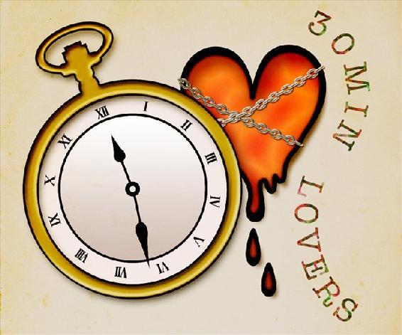

| 悲しくて 少し不思議で 温かい恋の話 (30MIN LOVERS) | |
| 川島千夜 | |
悲しくて、少し不思議で、温かい恋の話
これは悲しくて。
ちょっと不思議で。
そして、温かい恋のお話......。
一、気になる子供
「こんな時期に新しい転入生ですか!?」
私は椅子から腰を浮かせて園長の顔を見た。
朝の朝礼で開口一番、園長が私に転入生の知らせを持ってきたのだ。
「そうです。もう園長室にて一人で貴女の迎えを待っていますよ」
「えっ......保護者の方は......？」
「お忙しい方がたの子供をお預かりするのが保育園でしょう？」
白髪を一つにまとめた、半分道楽で保育園を経営しているような園長は、本当に子供が好きなのかどうか疑わしい人物である。
「それはそうですけれども......」
「とてもキレイで大人しい子ですよ。この『ほしぞら保育園』で最も園児に好かれている桃山先生になら、きっとすぐに懐くでしょうね」
「お言葉ですが、私に懐くことよりも他の園児達と打ち解けられるかの方が大切だと――」
「早く迎えに行ってあげてください。桃山雛菊先生っ！」
「はいっ」
園長にびしりと指をさされ、私は慌てて職員室から飛び出した。
「半端な時期に転入だと馴染むまで大変なんだよねぇ」
「桃山先生が担当になって超ラッキー」
「ホント。ただでさえ手一杯だからねぇ」
同僚の他人事のような言葉を背中に受けつつも、私は既に転入生の子をどうやって皆に馴染ませればよいのだろうかと、そのことに考えを向けていた。
（......まぁ、まずはどんな子なのかを見ないとね......）
私は園長室の前で呼吸を整えると、満面の笑みを作ってドアを開いた。
「はじめまして!! 新しいお友達はここにいるのかなっ？」
園長室に入るや否や、私は一人で不安を抱えているであろう転入生を和ませようと、『歌のお姉さんボイス』で元気に挨拶をした。
「........................」
返ってきたのは白々しいほどの沈黙だった。
「......えっ......と......」
園長室の椅子にポツン......と座っていたのは、一人の、明るい栗色の髪の女の子だった。
吸い込まれそうな程に美しいグリーンの目を持ったその子は、物憂げな表情を白い顔に浮かべ、じっと私を見つめていた。
彼女のグリーンの瞳に、黒い髪を肩の上で揺らしている、寝ぼけた顔の私が映っている......。
「私は桃山 雛菊。この保育園であなたと一緒に過ごす先生だよ。よろしくね!!」
「........................」
「ええっと......。そういえば、お名前もまだ聞いてなかったね。あなたのお名前はなんていうのかな？」
「........................」
「......あうぅ......先生ちょっと困っちゃうなー......」
少女は大きなグリーンの瞳を見開いたまま、一言も話そうとしないのだ。
年のころは恐らく５歳位。顔形から、明らかに日本人ではないということはわかるのだが......。
「デイジー・アルドヘルム。イギリスのどこかの島から来たとのことよ」
硬直したままの私に声をかけたのは、廊下から顔を覗かせた園長だった。
「......ということは、もしかして日本語が通じていないとか......!?」
私はこのお人形のような女の子と、他の園児とを馴染ませることが、一層困難なものへとなっていくのを感じた。
だが、困惑する私とは対照的に、園長はさらりとした態度で予期せぬ言葉を言い放ったのだ。
「というか、根本的に言葉が話せないそうですよ」
「......今なんて言いましたか？」
「ですから、このデイジーちゃんは声を発することが出来ないと言ったのです」
私は軽い立ちくらみを感じた。
「そういったことでしたら、臨時職員の私ではなく、正規の保育士か、若しくは専門の先生を担当につけるべきではないのですか？」
「うちにそんな優秀な保育士がいると思っているのですか？」
「自分で言わないで下さいよ......」
「耳は聞こえているそうなので、もしかしたら私達の言葉はわかっているかもしれませんが......。まぁ、この『ほしぞら保育園』で一番園児に人気のある桃山先生になら――」
「ああ、もうわかりましたから！ あまりそういったことは子供の前では言わないで下さいっ」
「わかっていただけたならいいの。じゃ、そろそろ園児たちのお迎えが始まりますから、早く準備してくださいね」
「......はい」
園長は踵を返すと、さっさと園児たちのお迎えへと行ってしまった。
後に残された私は、無言で佇む幽霊のような幼女に引きつった笑みを向けた。
「デイジーちゃんか......。デイジーって日本語で雛菊って意味なんだよ。だから、私と同じ名前だね」
「..................」
「私もヒナギクって言う名前だし。デイジーは雛菊だから......えっと、つまりね......」
「..................」
「うん......そろそろ行こうか」
私はただただ佇んでいるだけのデイジーちゃんに、手を差し出した。
彼女は戸惑うように私の手を見つめている。
「大丈夫。怖くないよ。一緒に教室に行くだけ。新しいお友達も......きっとできるから」
震えているのだろうか。デイジーちゃんの着ている、白い、天使のようなワンピースが小さく揺れている。
「..................」
「うーん」
彼女は小さな身体をこわばらせて、手を触ろうともしない。
不安そうな目で私を見つめている小さな子を前にして、私は怒りと同情を感じざるを得なかった。
（外国から来たばかりで不安なはずなのに、こんな小さな子を一人で置いていくなんて保護者はどうしているのよ！ それに園長だって、いくら保育士の資格を持っているからといったって、こんなアルバイトの私に任せっきりにするなんて、最近ますます職務が怠慢に......）
「..................」
「あ、ごめんね。ちょっと考え事しちゃって......」
私は心配そうに自分を見上げているデイジーちゃんを見て、あることを思いついた。
たまたま髪につけていた、白い小さなキクの花飾りがついたヘアピンを外し、それを彼女の前に差し出して私はゆっくりと微笑んだ。
「これは、ヒナギク。そしてデイジー。私とあなたは同じ。だから......怖くない。ね？」
「..................」
デイジーちゃんは妖精のような顔を近づけ、そのヘアピンを手にとった。
「........................」
一瞬、デイジーちゃんが微笑んだのかと思った。
だが、それは私の目の錯覚だったようで、彼女は澄ました顔でそのヘアピンを自分の髪に挿すと、私の手を握った。
それでも、十分だった。
警戒心を抱く子供と少しでも距離が縮まったのだから。
「じゃ、行こうか！」
私は静かに頷くデイジーちゃんの手を引き、教室へと向かったのだった。
「はーい。今日から新しくお友達になるデイジーちゃんだよー。みんな、仲良くしてねー」
思い思いの場所に座る子供達にそう告げる私。
だが保育園も年長になると、自分とは違う子を排除しようとする感覚も身に付き始めるころだ。
「こいつしゃべらねえよー」
「なんか怖いよー」
「お目めの色がちがーう」
口々に言っては、デイジーちゃんを避けるようにして遊び始める園児たち。
もちろん、当のデイジーちゃんも私の後ろに隠れてしまい、打ち解けるようなムードなんて全く無い。
（初日じゃ、こんなものかな......）
私はため息をついて、デイジーちゃんの頭を撫でた。
「そのうち、お友達もできるようになるから、大丈夫だよ」
「..................」
彼女の無言に否定の意思を感じる......。
こんなに心を閉ざしてしまうのは、やはり言葉のせいか不慣れな環境のせいか。
いずれにしろ、少なくとも一人でも側に居る人間がいるとわかれば安心するかと思い、私はデイジーちゃんの隣に腰を下ろし、ニコニコと話しかけてみることにした。
「よっし、先生とお話ししようか。先生の日本語わかるかな？」
「..................」
「キャン、ユー、ヒアー、ジャパニーズ？」
「..................」
「あー。私の英語って本当に下手だよね......自分で聞いて鳥肌立ったよ......。ところで、デイジーちゃんの髪の毛、すごくきれいな色で、サラサラで可愛いんだね」
「..................」
無反応。
さらに無反応。
無反応の連続である。
ピクリとも表情を変えないデイジーちゃんに代わり、近くで遊んでいた、他の園児が話を聞きつけて私の背中によじ登ってくる。
「ヒナギク先生のおかっぱも、かわいいよ～」
「えっ!? 先生の髪型はおかっぱじゃないよ、ボブって言うんだよー」
「おかっぱ、おかっぱー」
「..................」
次々と寄って来る子供達に押し出されるように、デイジーちゃんはどんどんと教室の隅へと移動し、私を見つめている。
私は久々に本気で困っていた。
「よーし。先生の得意技見せちゃうぞ。ほらパイナップルっ」
自分でも死ぬほどつまらないとわかっている。それでも、短い髪を真上にまとめた『パイナップルヘアー一発芸』で大笑いする子供達。
子供の純粋さに救われたと思い、私は園児達に笑われながら、デイジーちゃんを振り返った。
そこには、メチャクチャ冷めた表情で私を見上げている、グリーンの瞳があったのだった............。
「ヒナギク先生さようなら～」
「はーい、また明日ねー」
夕方。遅くまで仕事をしていた子供達の親が、ゾクゾクと迎えに来る。
私は父親や母親と嬉しそうに帰っていく子供達を見送ると、独り、ぽつんと教室でお人形遊びをしていたデイジーちゃんの側に寄った。
「デイジーちゃんのお迎えは誰が来るのかな？ パパかな、それともママかな？」
「..................」
パパという言葉にも、ママという言葉にも、全く反応を示さないデイジーちゃん。
私はふと思い立ち、ゆっくりと、発音の悪さで定評のある英語を発した。
「パピー？ マミー？ シスター？ ブラザー？」
「............っ......」
「!?」
デイジーちゃんは、私が下手な発音で発した「ブラザー」という言葉に反応をみせる。
「ブラザー......。お兄ちゃん......。お兄ちゃんが迎えにくるのかな？」
「..................」
お兄ちゃんでも、お姉ちゃんでもなんでもいい。
ともかく早く誰でもいいから、この子の迎えに来て安心させてあげて欲しかった。
私は深入りを禁じている園の規則を理解しつつも、この、言葉を発さない、お人形のような子供が気になって仕方が無かったのだ。
「失礼します。デイジー様の迎えに上がりました」
教室の入り口から聞こえた声に、私ははじかれたように立ち上がった。
「あ、デイジーちゃんの保護者さんです......か......？」
私は入り口に立っていた、デイジーちゃんの迎えに来た人物を見て、思わず首を小さく傾げてしまった。
そこには初老の、品の良い男性が立っていたのだ。
燕尾服のようなものを着た彼は、メガネの奥のしわに囲まれた目をデイジーちゃんに向けた。
「お待たせいたしました。さ、デイジー様。おうちへ帰りましょう」
「......あ......待って！」
老紳士へ近づこうとするデイジーを思わず止め、私は警戒するように彼を見上げた。
「あの、あなたはデイジーちゃんのお爺様ですか？」
「......私は......」
老紳士はビシっと背筋を正すと、私の目をまっすぐ見て言った。
「私はアルドヘルム公の執事でございます」
彼は英語訛りのイントネーションを交えて、確かにそう言ったのだ。
「アルドヘルム公の執事......？ アルドヘルムはデイジーちゃんの苗字だとして、公ってなに......？ というか......執事!?」
「デイジー様の保護者......という立場でしたら、お迎えに上がるには執事でも問題は無いはずでございますが？」
「た......確かに問題はない......っぽいけど......。って、デイジーちゃんの家って......？」
「アルドヘルム公はイギリス最西の島を納める由緒ある家柄でございます。イギリス王室のみならず、ヨーロッパの王族とのつながりのある血を――」
「あの......ごめんなさい。話がよくわからないのですが......」
「............失礼致しました。こういった話は庶民の者にはわかりにくいものでございましたね」
老紳士――もとい、老執事は小馬鹿にするような目で私を見ると、眼鏡を掛けなおした。
「ともかく、一流企業を営むデイジー様の兄上様はご多忙につき、私がデイジー様をお引き受けいたします」
「あ......ああっ。ちょっと！ まだあなたがデイジーちゃんの保護者代理だと確認できたわけでは――」
老執事がデイジーちゃんの腕をつかみ歩き出そうとするのを、私は慌てて止めた。
「桃山先生っ!!」
「わっ!? 園長......」
廊下で老執事ともみ合う私に、園長の叱責が飛んできた。
「皆、終業報告をするために職員室であなたを待っているんですよっ。早くデイジー様をお迎えの執事様にお渡しして、職員室に来てくださいっ」
園長の態度が保護者の前では微妙に違うのはいつものことなので気にはしないが、私はこの老執事にデイジーちゃんを渡してしまって良いものか、まだ迷っていた。
「デイジーちゃん......大丈夫？」
「..................」
デイジーちゃんは私の顔をチラリと見ると、彼女は老執事の足元へと移動していった。
「では、失礼致します」
手をつなぐわけでもなく、老執事はデイジーちゃんを促して外へと出て行く。
校門の外には立派な外車が置いてあるのが見える。きっとデイジーちゃんのお迎えの車だろう。
「......なんだか、すごくお金持ちそうですけど......。ワケアリそうですね......」
私は静かに発進していく車を見送りながら呟いた。
「ワケアリなのはこちらも同じです。人の心配をしている暇があったら、自分のことを心配した方がよいですよ」
イライラとした様子の院長の言葉に、私は首をかしげた。
「何のことですか？ 確かに私はアルバイトで生活は不安定ですけれども、一応薄給ながらここで仕事はしていますし、夢も追っていますし......」
「薄給で失礼しましたね」
園長は苛立ちを飲み込み、軽く咳払いをした。
「............終業報告の際に言おうと思ったんですけれどもね、この『ほしぞら保育園』は来月をもって閉園することとなりました」
「......え？」
「昨今の少子化に押されて、当保育園は非常な経営難に直面していましてね。それは、薄給だったことでもわかるかと思いますが......。これ以上の経営は困難という判断で、来月で門を閉ざすことに決めました」
私は彼女の言葉を理解するのに、相当な時間を要した。
「ちょ、ちょっと待ってくださいよっ。じゃあ、何でデイジーちゃんを受け入れたんですか!? もう潰れるってわかっているなら、新しい園児を迎えるなんて詐欺じゃないですか」
さすがに怒り出した私に、園長は冷めた目を向ける。
「彼女が入園してくれたお陰で閉園が１ヶ月延びたこと、感謝してくださいね」
「............そんな......」
「ワケアリでもなんでも、お金を払っていただければこちらは助かるというものですからね。まったく、居るところには居るんですね、あんなお金持ち......」
ブツブツと、妬みや僻みを呟きながら去っていく園長の背中を眺め、私はぼんやりと自分のこれからのこと、そして、あの女の子の身の上のことを考えていたのだった。
二、出会い
「おもちゃの紙飛行機を飛ばしー。笑いながら競争するー♪」
休日。誰も居ない公園。晴天の空。むなしい歌声。
私は独りアコースティックギターをかき鳴らし、鳥と空気を観客に歌を披露していたのだ。
これが私の休日の過ごし方だった。
いつもならこれでも気分が晴れ、保育園での苦労や園長の嫌味、将来の不安も忘れることができたのだが、今日はそうもいかなかった。
来月には終わってしまう私の職場。
これからの生活の心配。
そして、話すことのできないあの女の子......。
「......あー。もうだめだぁ......」
私は悶々としながら歌うことを止め、安いメロンパンと牛乳を手に持って寂れた公園の、これまた寂れた噴水の縁に腰掛けた。
「はぁ......今日もまた、メロンパンと牛乳......。でもいいの、いつかクリームパンとチョココロネをお昼に食べることができる日がくるんだから!! ......くるのかなぁ......」
私はむなしい自問自答を繰り返しながら、サイズだけがとりえの、近所の安パン屋さんのメロンパンを口に運んだ。
慣れた甘い食感がジュワリ......と口内に広がり、一瞬の幸せに包まれる。
だが......。
そんな一瞬の幸すら、神様は許してくれなかったようだ。
「バウゴウバフバフバフバフゴウゴウワンっ!!」
「ちょ、なっ？ あ、あーーーーっ!?」
楽しげに猛り狂ったゴールデンレトリバーが牙......ではなく、舌をベロンベロンとむき出しにしながら、私に突進してきたのだ。
水柱を立てて浅い噴水に落ちる、私とゴールデンレトリバー。
「わっ......っぷ！ あぶ......っ......ぷはっ！」
「バウバウバウバウハウハウハフハフハフハフ......」
「やめてっ、飛びつかない......でっ。溺れる......浅い噴水で溺れ......ぶぶっ......」
じゃれ付く大きな毛玉のせいで、私は寂れた噴水の中で水死体になる――と、嫌な死に様を想像した時だった。
「大丈夫ですかっ!?」
よく通る、優しげな男性の声が犬の後ろから聞こえた。
「こら、マックス。離しなさい！」
「がっ......ぶ......はぁっ......はぁはぁはぁ......」
私に全体重をかけていた犬がその身体をどけ、私はどうにか身を起こして息をつくことが出来た。
「な......何が......起こったの......？」
酸素が欠乏して混乱していたのだろう。私は思わずそんな質問を呟きながら、犬の飼い主を見上げた。
「あ............」
私の前には、一人の長身の男性が立っていた。
青光りするほどの黒い髪に、輝くほど明るいグリーンの瞳。そして黒縁のメガネをかけた一瞬地味かと思えるような彼。
だが、よく見れば透き通るような白い肌の欧米系の外国人である。
（どこかで......見たような......）
思わず目を見開いたまま彼を見上げていると、頭のいけない部分を打ったのかと心配になったらしい飼い主が、膝をついて私の頬に触れたのだ。
「ひっ......!?」
冷たい彼の指先の感触に、私は小さく身体を震わせた。
「あの......。大丈夫ですか？」
欧米系の見た目とは裏腹に、日本人より日本人らしい、整ったイントネーションで日本語を話す彼。
「すみません。妹がソフトクリームを食べたいと言うもので買っていたのですが、うっかりマックス――この犬のリードが手から外れてしまって。普段は大人しい犬なんですが、どういうわけか貴女に向かって突進していってしまい......」
「いもう......と？」
「ええ。デイジーという、そこでソフトクリームを舐めている少女です」
「..................」
「......でい...じー？ デイジー!? デイジーちゃんっ!!」
私は噴水の縁に座って、落ち着きはらった様子でソフトクリームを舐めているデイジーちゃんを見つけ、勢いよく立ち上がった。
「って、ことはあなたデイジーちゃんのお父さんっ!?」
「あ、いえ。父ではありません。保護者という立場ですが、デイジーの兄で――」
「あーーーーーーっ!!」
「!?」
勝手にどんどんとエキサイトしていく私にドン引きするデイジーちゃんのお兄さん。
私は手を差し出したまま固まっている彼には目もくれず、ザバザバと噴水の中を歩き、水中に落ちていたネックの折れたギターを拾った。
そう、私のアコースティックギターは犬と共に噴水に飛び込んだ衝撃で、ネックが折れてしまったのだ。
壊れたギターを持ったまま立ち尽くしている私に、デイジーちゃんのお兄さんが恐る恐る近づいてきた。
「あの、もしかしてそのギター......マックスが壊してしまいましたか？ 申し訳ございません。こちらで弁償させていただきます」
「......ギターは弁償できるからいいですけどね」
「はい......？」
「だから、ギターは弁償できるからいいんです。でもね、デイジーちゃんの幼少期は取り戻せないんですよっ!?」
「はぁ......？」
「はぁ？ じゃないっ。なんであなた、デイジーちゃんのお迎えにこないのっ？ 友達もいない、見知らぬこんな僻地で、あんな小さな子一人で不安なはずなのよっ！」
「僻地って......」
「確かに執事だか、おじいさんだかが迎えに来てはくれたけどね。デイジーちゃんが本当に安心できる人は、保護者であるあなたなのよ。あなたが迎えに来ないと、彼女、さびしいじゃないですかあぁぁぁっ!!」
「............あの......本当に大丈夫ですか？」
「......はぁ......はぁ......大丈夫......じゃない......です」
ギターが折れて怒っていたはずなのに、とんでもない方向で彼に怒りをぶちまけてしまった。
急激に上がっていた血圧が、急速に下がっていくのを感じる。
「ところで......あなたはなぜデイジーのことを知っているんですか？」
至極尤もな言葉がデイジーちゃんのお兄さんのきれいな口元から発せられる。
（恥ずかしい......）
沸騰した怒りが落ち着くにつれ、私は突然怒りをぶちまけた己の稚拙さが恥ずかしくなってきた。
「......私は、デイジーちゃんの保育士の、桃山 雛菊と言います......」
「ああ、そうなのですか？ デイジー」
穏やかに尋ねる兄に、デイジーちゃんは小さく頷く。
その一連の行動に、私はふとした疑問を感じた。
「......あれ？ デイジーちゃんは日本語わかっているのですか？」
「ええ。私の話す言葉で覚えたようなのですが、わかりますよ」
「そうだったんですか......。あまり反応してくれないから、わからないのかと思ってた......」
「あまり？ ということは、貴女にデイジーが反応を見せたのですか？」
「ええ。多少ですけど......。でも、今、デイジーちゃんの髪についている雛菊の髪飾りは、私があげたものですけど、ちゃんとつけてくれているし......気持ちはもう通じているよね？」
水を滴らせながら屈みこんだ私に、デイジーちゃんは小さく首を傾げた。
「............桃山......ヒナギクさんとおっしゃいましたね？」
私達の様子を見ていたデイジーちゃんのお兄さんはなにやら考えながら、私に言葉をかける。
「私は、デイジーの兄のヴィンセントと申します。デイジーに髪飾りをくれたりと気を使ってくださったのに、噴水に突き飛ばしてしまったり、ギターを壊してしまったりと大変失礼致しました」
「あ......いえ。私こそ突然怒りをぶちまけてしまって......ごめんなさい......」
「いえ。確かにデイジーの送迎に付き合えない私がいけないので......」
彼は事情ありげな苦笑を浮べると、公園の向こう側に止めてある車を指差した。
昨日、老執事が乗っていたものとは違う車なので、きっと彼自身の車なのだろう。
「あの、よければ、近くに車を止めてありますので、私達が住んでいるマンションまでいらしてもらえませんか？ ギターとその濡れた洋服を弁償させてください」
「え......あ......。そう改めて言われると......」
「遠慮はしないでください。全てこちらの責任なのですから」
黒い髪に黒い眼鏡をかけているとはいえ、長身で色白の男性にこうも穏やかに迫られては、男性に免疫のない私としては、ただ赤面したまま首を横に振ることしかできない。
（こんな時......中高短大と女子ばかりの環境で育った自分が恨めしい......）
私はしどろもどろになりつつも、どうにか言葉を発した。
「あーいえ、その......さっきはついカッとなっただけで......。えっと、弁償とか気にしないでいいですよ。正直......見知らぬ男性のお家に上がるのは、ちょっとアレですし......。あは......あははは......」
「ああ......。デイジーもいますので心配しないで大丈夫ですよ？」
「......デイジーちゃん......」
私はソフトクリームのコーンを食べ始めたデイジーちゃんを見下ろした。
手をベタベタにさせたその姿とは裏腹に、彼女は賢そうな目で私を見上げている。
すると――。
「あ............」
突然、デイジーちゃんが私の手を握ったのだ。
溶けたソフトクリームでペトペトする小さな手が、一生懸命私の手を握る......。
「デイジー......」
ふと、私以上に、デイジーちゃんの兄であるヴィンセントさんが驚いた顔をしているのが目に入る。
「ヴィンセントさん？」
「あ、すみません。デイジーが私以外の人の手をつなぐことなんて、今までなかったもので......」
「そういえば、あの老執事とも手はつながなかったですね......」
「ああ......彼は少々躾けに厳しいタイプですから......」
穏やかで優しそうなヴィンセントさんの顔には少し、疲れが見え隠れしている。
事情はわからないにしろ、祖国から遠く離れたこの土地で若くして幼い妹の保護者となった兄にも、それなりの苦労があるのだろう。
私はつい、同情の念を抑えきれずに言ってしまった。
「......ねえ、デイジーちゃん。私、デイジーちゃんのおうちにお邪魔してもいいかな？」
「..................」
私の顔をじっと見つめ、小さく頷く幼女。
私は肩の力を抜き、ヴィンセントさんの顔を見た。
「わかりました、デイジーちゃんもいることですし、お邪魔させていただきます」
「......ありがとうございます」
ほっとしたように微笑むヴィンセントさん。
そして、彼はふと気がついたように上着を脱いだ。
「あ、気がつかなくて失礼しました。濡れたままですと寒いでしょうから、これでよければ羽織っていてください」
「え......あ......あ......」
ヴィンセントさんの暖かい上着を肩にかけられ、私はお礼も言えずに固まってしまった。
爽やかな良い香りが上着から漂ってくる......。
「あの、だだだ、大丈夫ですからっ！」
「さ、行きましょう。すぐ近くのマンションですから」
「ちょっと。聞いてるっ？」
「..................」
「デイジーちゃーんっ！」
初対面の男性か上着をかけられ顔を赤らめた私は、デイジーちゃんに手を引かれ、彼らの住まうマンションへと向かうことになったのだった。
「休日は家政婦さんをお呼びしていないので少々散らかっていますが、遠慮せずに上がってください」
「............遠慮......したいです......」
彼らについて到着したマンションは、地元でも有名な高級デザイナーズマンションだった。
コンセルジュのいる広いエントランスを抜け、エレベーターで昇ること最上階。私は今、自分の住むアパートの全室を合わせたよりも広い部屋の前で、呆然と立ち尽くしていた。
「本当にあの老紳士が執事だったと、今始めて信用しました......」
「ああ、ジョンはこの部屋の向かいを借りて住んでいますよ」
少し打ち解けた様子でヴィンセントさんが話してくれる。
「ジョンさん優雅ですね......」
「彼は私の幼い頃からの執事で、ずっと私達兄妹の面倒を見ているんです」
「へ......へぇ......」
「城に住んでいた頃は勝手に部屋に入ってくることもあり大変でしたが、日本に来てから、プライベートは分けるようにしているので、気遣いは必要ないですよ」
「......今、城って言いませんでした？」
「ああ、もう今では誰も住んでいませんけどね......」
「城、執事、アルドヘルム公......。つかぬ事をお伺いしますが、あなた方は『王公』とかいう生き物でございますか？」
「ヒナギクさんは面白い人ですね。王公と言っても、イギリスの離島を治めていた末裔ですから、なんの権力も権限もありませんよ。あるのは......不自由くらい......ですかね」
「............ああええっと。もしその話が本当でしたら、先ほど王子様に無礼なことを言った私は、ギロチンものですよね。あははは......」
急に目の前に突きつけられた、別の世界の会話についていけず、目を白黒させる私。
「ふふ。そんな気遣いは必要ないですよ」
ヴィンセントさんは半信半疑な私に苦笑すると、客室と思わしき部屋の前に案内し、タオルと着替えを手渡してきた。
「私の服なのでサイズが大きいですが、濡れた服は乾燥機で乾かし次第お返しますので、少しの間これで我慢していただけますか？」
「あ......はい......」
「それでは着替えたら出てきてくださいね」
私は背中を押されるように部屋に入ると、手渡された服を眺めた。
「......やっぱり、ブランド物だ。しかもセンスいいし......」
私はこんな生活もあるのかと、小さくため息をついて着替えを始めた。
「............こ、この香りは......っ」
渡されたタオルからは外国の柔軟財の香りがただよい、ますます自分との世界の違いを思い知らされたのだった。
「あの......着替え、ありがとうございました......」
着替えを済ませた私をリビングで待っていたのは、ポップな色のマカロンをかじるデイジーちゃんと、美味しそうなティーセット。そして、柔和な微笑みを讃えるヴィンセントさんと......有名な高級アコースティックギターだった。
「ああ、ちょうどよかった。昔、気まぐれでギターを習ったことがあって、その時の物が出てきたんですが、もしよかったらこのギターを使っていただけますか？ もちろん、元のギターのメーカーがよければ同じ物を――」
「いえっ。こ、このギターで全然......というかむしろ、このギターがいいですっ。お願いしますっ！」
私は飛びつくようにギターを掴むと、ヴィンセントさんに懇願した。
拝むようにギターを受け取る私を、デイジーちゃんは面白そうな目で見ている。
「うわーっ。この弦の柔らかさ......ネックがすぐに手に馴染む感覚......。すごい、すご過ぎますっ。ありがとうっ!! デイジーちゃん、ヴィンセントさん」
「いえ、喜んでいただけてこちらも安心しました」
微笑むヴィンセントさんは、ふとデイジーちゃんに目を向けた。
「デイジーどうしたんですか？ マカロンを持って立ち上がったりして......？」
「..................」
興奮仕切りの私に、デイジーちゃんが一つのマカロンを渡してきたのだ。
「デイジーちゃん、私にマカロンくれるの？」
「..................」
彼女の目線は手に握られているギターと、私の口元を交互に行き来している。
「......もしかして......歌、聴きたいのかな？」
「..................」
「ああ、わかった。わかったから。そんな口元にマカロンを押し付けなくても大丈夫だよ」
私の歌の対価はマカロンらしい。
それでも歌をせがまれた私は嬉しくなって、歌の許可を取ろうと、そっとヴィンセントに目を向けた。
彼は真剣な眼差しで、意思を表示しているデイジーちゃんを見つめている。
（......妹思い......なんだ......）
私は大きく息を吐いて、大きなソファーの上に腰を下ろした。
彼の許可は必要ないだろう。
小さく弦をはじくと、優しく透き通るような音が部屋中に広がっていく。
自分の歌声がこのギターに負けてしまいそうな気がしたけれども、私は精一杯の気持ちをこめて、お気に入りの曲を歌った。
『――悲しいことは虹のたもとに置いてきて、さあ宝箱を探しに行こう♪』
デイジーちゃんがリズムに合わせて首を振り、隣に座るマックスが尻尾を振っている。
少しだけ離れた場所から私たちを見守っているヴィンセントさんは壁に寄りかかり、どこか悲しそうな、それでいてどこか懐かしそうな、複雑な表情を浮べていた。
『――虹のかかるそこには、大きな宝箱が埋まっているのー♪』
歌い終わった私は、軽く目を閉じて息を吐いた。
心地よい緊張感がほぐれていく。
すると――。
パチパチと小さな拍手の音が私の耳に響いた。
「......デイジーちゃん......」
私の目の前に座っていたデイジーちゃんが、一生懸命手を叩いてくれていたのだ。
そう......満面の笑みをたたえて。
「笑ってる......」
私は予想外のその反応に驚いていたが、一番驚いていたのは、兄のヴィンセントさんだったのかもしれない。
彼は黒縁の眼鏡の奥で瞳を大きく見開き、妹を見ていたのだ。
「ヴィンセントさん......？」
私が見ていることに気がついた彼はすぐに優しげな微笑を浮かべ、私に頭を下げた。
「すてきな歌を聞かせてくれて、ありがとうございます。妹もこんなに喜んでいます」
温かい紅茶を私に手渡しながら、ヴィンセントさんは小さく頭を下げた。
「このギターすごくいい音が出るし、助かりました」
「いえ、ギターの音が良く聞こえるのも、あなたの歌声がいいからですよ。このまま歌手になっても良いくらいです」
「あー。実は......」
私は、本当はこんなこと言うべきではない......とは思っていたが......。
「私は歌手になりたくて、田舎から上京してきたんです。でも、私よりも、もっともっと上手い人だって居ますし、生活するだけでも大変で......。それで、短大で保育士の資格を取っていたこともあって、アルバイトで保母をしながら歌手を目指しているんです」
つい、身の上話をしてしまう自分がいる。
「がんばっているですね」
「子供が大好きだから、子供が喜ぶような歌を歌っていけたらなって......って、すみません、初対面の人にこんな話を......」
二人のグリーン瞳に見つめられ、私は慌てて手をパタパタと振った。
ヴィンセントさんは頬を赤くしている私に微笑みかけると、静かに口を開いた。
「良い夢だと思います。......貴女はなんでもできる身分なんですから、夢を追っていたほうがいいですよ」
「ヴィンセントさん......」
「また、ぜひ歌を聞かせていただけますか？」
「はい......よろこんで！ デイジーちゃんもよろしくね......って、デイジーちゃんどうしたの？」
先ほどまで私達の会話を黙って聞いていたと思っていたデイジーちゃんが、うつうつと目を閉じて船を漕いでいる。
「ああ......そろそろ薬が効いて眠くなる時間でしたね。今日は散歩もしましたし、疲れたのでしょう。デイジー、部屋で少し昼寝をしましょうか」
デイジーちゃんは素直に頷くと、眠そうな目を擦りながら隣の部屋へと入って行った。
その後ろをマックスが大きなお尻を振りながらついていく。
「薬......？ 風邪でもひいたんですか？」
「............まぁ、ちょっと体調を崩していまして......」
「そうなんですか......デイジーちゃん、いい子だから我慢しないといいんですけど......」
「兄バカと言われるかもしれないのですが、無口だけど素直でかわいい妹ですよ」
妹を褒めるヴィンセントさんの顔を眺め、私は思いきって気にかかっていたことを質問した。
「......ヴィンセントさん......。つかぬ事をお伺いしますが、デイジーちゃんがしゃべらないのは、その......何か病気が原因なんですか？ それとも......」
「............確かに持病はあるんですが......」
ヴィンセントさんはかけていたメガネを外し、試すような目を私に向けた。
デイジーちゃんよりも明るい、宝石のようなグリーンの瞳が私の心を見透かすようにじっと見つめている。
（......うわっ......。この人......眼鏡とったらメチャクチャかっこいいし......）
髪は真っ黒だけれども、まるでどこぞの王子のような風格を漂わせていることに気がついた私は、とたんに緊張し顔が紅潮していくのを感じた。
私の態度に気がついたのか、ヴィンセントさんは私の手を握り、その身を寄せる。
「あ......え......っ？」
「妹のことを気にしてくれてありがとうございます。デイジーがあんな風に笑ったのも久しぶりで......」
「そそそそ、そうなんですか......」
ヴィンセントさんの長く白い手に握られた感触が気になってしまい、私は会話どころではない。
それなのに、彼はさらに私の手を引き寄せると、薄く赤いその唇で私の手の甲に、あろうことか口付けをしたのだ。
小さな音を立てて離れる唇。長身の王子様のような男性。広い家。午後の紅茶交じりの空気。
私のメンタルはもう限界だった。
「もし良ければですが、デイジーのためにこれからも――」
「あのっ。わ、わた、私、そろそろ帰りますね！」
「ヒナギクさん？」
「色々お世話になりました！ デイジーちゃんにもよろしくお伝えくださいーっ」
しつこいようだが年上の男性が嫌いという訳ではない。
ただ、中高短大と、女子ばかりの中で育っていった私は、こうした男性との接触が苦手なわけで――。
（って、だれだってこんなところであんな扱いされたら緊張するし!!）
緊張の限界を迎えた私は、ヴィンセントさんの手から無理やり逃れると、急いでギターを背負って玄関へと向かった。
「あの、ヒナギクさんどうし――」
「お邪魔しましたぁ！」
バタンとドアを閉めエレベーターに飛び乗った私は大きく息をついて、あることを思い出した。
「――あ、そういえば、保育園が潰れるってこと......言いそびれちゃった......。って、それどころじゃなかったし!!」
広いエレベーターの中。
私の一人突っ込みの声だけが、響いたのであった。
三、謎の集団
朝は繰り返される。
私の心情など全く気にすることもなく、日常はやってくるのだ。
「ヒナギクせんせいー。おはようございます！」
「おはようー」
新しいギターを手に、男物のブランド服を着たまま家に帰った私は、こうして翌朝、いつも通りにバイト先の保育園で園児たちをお迎えしていた。
（ちゃんと洋服、クリーニングに出してお返しししないと......。昨日はちょっとパニくってそのまま出てきちゃったけど、そのお詫び......って、どうしようもないよね......）
日々の生活と果てしない夢に追われる私は、あんな一時の夢幻のような出来事は忘れたほうがいいのだ。
（王子様とか執事とか......そこら辺に転がっているはずが無いわっ）
私は気を引き締めて、顔を上げた。
「おはようございます。ヒナギクさん」
「きゃあっ!?」
顔を上げた瞬間に飛び込んできたのは、夢幻の住人であったはずのヴィンセントさんだった。
相変わらず黒縁の眼鏡を掛け地味な成りをしていたが、長身のその姿は園児たちのたむろする保育園の校門ではかえって目立っていた。
「あ、あ......おはようございます。昨日はその......失礼しました。えっと、洋服の方もお借りしたままで......。ちゃんとクリーニングに出して、今度お返しいたしますので......」
「ああ、気にしないでいいですよ。私も貴女の服をお預かりしたままですし。ぜひ、また今度うちで歌声を聞かせてくださいね。デイジーも楽しみにしていますから」
「デイジーちゃん......」
ヴィンセントさんの足元にいたデイジーちゃんは、私に一瞬だけ子供らしい笑顔を見せると、すぐに私の両手にぶら下がるように抱きついてきた。
「こら、デイジー......」
「ああ、いいんですよ。私は懐いてもらえて嬉しいですし」
「ヒナギクさん......」
ヴィンセントさんは嬉しそうに目を細めた。
「ヒナギクさんがいてくれるので、安心してデイジーをこちらに預けることが出来ます」
「あ......ヴィンセントさん。そのことなんですが――」
「もーもーやーまーせーんーせーいー!!」
保育園が閉園になるということを言おうとした私に、地の底から鳴り響くような園長の声が突き刺さった。
「はいっ!?」
「何をなさっているんですかっ？ 校門前で父兄と立ち話なんて、いつから貴女はそんな立場になったんですか！」
「ええ!? いつからって......保育士はよくこうして校門で父兄と話を――」
「桃山先生は園児に好かれればよいのであって、父兄に好かれる必要性はありませんっ！」
「は......はぁ......」
「あなたは始業の時間と言うものがお分かりになっていないのかしらっ？ あと五分でお教室の時間ですよっ。ほら、早くお行きなさいっ！ ......もう、うちの職員が失礼致しました。それでは御宅の大事なお嬢様は責任を持って、桃山がお預かりいたします」
「あ、ああ......そ、それでは失礼します......」
私は園長に肘で押されるようにして、その場から立ち去るはめになってしまった。
ヴィンセントさんは柔和な笑みを浮かべ、そんな姿の私をずっと見送ってくれていたのだった。
「こいつー。まだしゃべれないのかよー」
「人形みたいでこーわーいー」
「なんであなたは笑わないのー？」
「なんか言えよ～」
お遊戯の時間。
私は案の定始まってしまった仲間はずれ――もとい、いじめからデイジーちゃんをかばうため、大きな声で皆の注目を集めた。
「みんな、デイジーちゃんは遠いお国から来たから、まだ言葉がわからないの。イギリスって知っているかなー？」
「しらなーい」
「どこー？」
「ばーちゃんちより遠いのー？」
私の誘導は成功した。
私は話の矛先をある意味デイジーちゃんに向けると、彼女を膝に抱きかかえてイギリスの話をし始めた。
「イギリスにはシャーロックホームズって探偵さんがいてね――」
私の即興の話に引き込まれていく園児たち。こうしておけば、デイジーちゃんに興味を抱きつつも、彼女の事情をわかってくれる子供も出るはず。
私は膝の上で嬉しそうに私にもたれかかっている少女のクリーム色の髪を撫で、この先の平和を祈った。
だが、園児たちの中にはそうしたことを快く思っていない子も、そして、先生もいたのだ。
「桃山先生。デイジーちゃんのことですが......」
夕方。最後まで残っていた迎え待ちのデイジーちゃんと教室の隅でお人形遊びをしていた私は、同僚の先生に廊下に呼び出された。
「桃山先生はデイジーちゃんを特別視しているようですが、そういったひいきは良くないと思うんですよね」
「え......？」
同僚の先生が顔しかめる。夕方のオレンジ色の空気が凍り付いていくように感じる。
「桃山先生の教室の子が、ヒナギク先生がデイジーちゃんばっかり抱っこすると文句を言っていましたよ。確かに、デイジーちゃんは外国から来た子で、園児たちにとってはものめずらしい存在かもしれませんが、話さないのは当の本人のせいですし......」
「ちょっと待ってください。本人のせいって......。言葉もわからないようなところに、たった一人で来ているんですよ。せめてお友達ができるまでは、私が側に居てあげないと――」
「友達なんて無理ですよ」
「はっ？」
「桃山先生も知っているでしょう？ この『ほしぞら保育園』は来月で閉園されるんです。そんな短期間で友達なんてできませんし、出来たとしてもすぐに離れ離れになるだけです」
「だったらなおさら、私たち教員がお友達にならないと、彼女にここでの楽しい思い出を残してあげることができないじゃないですか」
「桃山先生......。確か歌手になりたいんでしたよね。だったら、こんなところで先生ごっこなんてしていないで、早く転職するか歌で食べていけるようにしたらいいと思いますよ」
「先生ごっこって......!!」
私は彼女の言葉にカッとなり、思わず顔を赤らめた。
確かに歌手は目指しているが、だからと言って小さな子供一人の面倒もみられない人間になるつもりはない――。
そんな言葉が喉まででかかったとき、廊下の向こうから私を呼ぶ声がした。
「ヒナギク先生いらっしゃいますか？ 私、アルドヘルム公の執事の、ジョン・グレゴリーでございます。デイジー様をお迎えに上がりました」
以前迎えに来ていた、あの老執事だ。
（......今朝はヴィンセントさんがお見送りに来てくれていたのに......）
私はまだ何かモノ言いたげな同僚と別れると、デイジーちゃんを連れて老執事のもとへと急いだ。
デイジーちゃんの姿を見ると、目を細め緩い笑みを浮かべる老執事。
「あの......今朝はヴィンセントさんが自分からお見送りにきていたのですが、彼はお迎えには来ないのですか......？」
「ヴィンセント様はお忙しい方でございます。自ら企業を経営し、その交渉などで日々動き回っておりますので、本来ならばこうした雑用は私のような執事がするべきことなのです」
「雑用って......」
「雑用は雑用でございます。王侯貴族では子供が生まれれば乳母に預け、自らは公務に集中するのが慣わし。それなのに、ヴィンセント様はデイジー様を自ら教育し、あまつさえお見送りなどと......。まったく、どこの庶民に吹聴されたのか......」
「ちょ、ちょっと。あの......色々と突っ込みどころはあるんだけど。その......ヴィンセントさんとデイジーちゃんのご両親はどうしているんですか？ 乳母さんに面倒をという前に、ご両親がこうしてみていればヴィンセントさんがお迎えなどに来なくても......」
「先アルドヘルム王公......ヴィンセント様のお父上様は大変病弱な方で、デイジー様が生まれて間もなくお隠れになりました」
「あ......そうだったんですか......。ごめんなさい......」
「......奥様に関しましては......貴女のような方には関係のない話でございますね。口を謹んでいただければと思います」
老執事は私をまるでゴミを見るような目つきで眺めると、デイジーちゃんの肩に手を置いた。
「さ、帰りますよ」
「........................」
少し悲しげな目で私を見上げるデイジーちゃん。
私はその瞳に言い知れぬ不安を感じ、思わず、足を踏み出した老執事に手を伸ばした。
「あのっ。だったら、せめてヴィンセントさんがお仕事終わるまで私がデイジーちゃんを預かりますので、お兄さんと一緒に帰らせてあげてくれませんか？」
「......一介の保育士風情が、余計な口を挟まないようお願いいたします。と、先ほど遠巻きにお伝えしたはずでございますが？」
「う............すみません......」
彼の強い言葉にそれ以上止めることも出来ず、私は去っていく老執事とデイジーちゃんを見送った。
「今日は車で来ていないんだ......」
以前は校門の前に大きな黒塗りの外車が止まっていたが、今日の老執事は徒歩で迎えに来たらしい。
確かに、保育園からデイジーちゃんの住む高級マンションまでは、歩いても十分楽につける距離だ。
でも......。
彼らがお金持ちであるなら。身分の高い人達であるなら。いくら日本が他と比べて平和だといっても、幼女と老人二人で夜道を歩いて安全である保障はない。
それに、老執事は明らかによい身なりの執事服を着ている。
......すごく嫌な予感がする。
「お疲れ様でしたああぁぁ！」
私は走って職員室まで戻ると、挨拶もそこそこに帰り支度を済ませ、慌てて保育園から飛び出した。
「あ、ちょっと、桃山先生っ。他の先生から聞きましたよっ。ちょっと――！！」
背後で園長がなにやら喚いているような気がしたが、私は完全に無視を決めることにした。
「っはぁ......はぁ......見つけたっ......！」
保育園から高級マンションの地区へと走ること数分。
私はゆっくりと、暗く静かな道を歩く老執事とデイジーちゃんの姿を見つけた。
（......なんでこんな人通りのない、暗い道を選ぶのよっ。危ないじゃないっ！）
私は老執事の無用心さを内心怒り、そっと二人の後をつけて歩くことにした。
先ほどまで赤い明かりを分けていた夕日は完全に落ち、辺りは点在する街灯だけが足元を照らすような暗い闇が迫っていた。
（何事もなくマンションにつければいいのだけど......）
無言で歩く老執事と少女。そして、後をつける私が、最も人気の少なくなる公園のわき道を通りかかったときだった。
「Stop――」
暗く、低い男の声が行く手をさえぎったのだ。
「!?」
驚いて足を止める老執事。デイジーちゃんもおびえたように、老執事の足にしがみつく。
暗がりから男が姿を現す......。
「You should put the child......」
『こんにちは』と『ありがとう』くらいしか英語の話せない私だったけれども、この状況と雰囲気から、公園の茂みから現れた男がデイジーちゃんを置いていけと言ったことはわかった。
（まずい。これは本当にまずい）
現れた男は一人だけではなく、四人の男達が老執事とデイジーちゃんを取り囲んだ。
暗くて顔は良くわからないが、三人は日本人、そして一人は欧米系の風貌をしているようだ。
「..................」
硬直したまま動かない老執事。
にじり寄る男達にデイジーちゃんが怯え、震えているのがわかる。
（ちょっと、何でさっさと助けを呼ばないのよっ。バカ執事っ！）
私は取り出した携帯を警察につなぐ間もなく、大きな声を上げて彼らに突進した。
「きゃーーーーーーっ!! だれかあぁぁーーっ！ 人攫い......誘拐よおおぉっ！」
私の絶叫が夜の公園中に響き、驚いたカラスが飛び出し、男達が浮き足立つ。
「おいっ！ その女を黙らせろっ」
リーダー格と思われる欧米系の男に命じられた男達が、なにやら口々に喚きながら私の方へと向かってくる。
「N......No!!」
老執事も、片腕を男につかまれたデイジーちゃんを抱きかかえ、必死で抵抗している。
「や......やめなさいいぃ！」
私は持っていたかばんで、襲い掛かってきた男の顔を殴ると、デイジーちゃんの腕を掴んで攫おうとしている男に向けて、何度もかばんを振り下ろした。
「離せ！ 離せぇぇっ!! デイジーちゃん逃げてーっ」
私の攻撃に怯んだ男が、デイジーちゃんの手を離す。
その隙にデイジーちゃんを逃がそうとした、その時だった――。
「ぶっ殺すっ!!」
私がかばんでボコボコにしていた男が私を突き飛ばし、馬乗りになってきたのだ。
大きな男の手が私の首にかかり、きつく締め上げていく。
（息が......っ！ ころ......される......っ）
息が止まり、あまりの苦しさに意識が霞み始めてきた瞬間、突然私の首を締め上げていた男の手が緩んだのだ。
「ヒナギクさんっ！ デイジーっ！」
今朝聞いたばかりの、柔らかく、それでいて男らしい声が耳にこだまする。
「うっ......け......けほっ......！！」
男の手から解放され大きく息を吸った私は、咽びながらも顔を上げた。
「貴様らっ!!」
ガツンと鈍い音が響き、襲い掛かってきた男が殴られ、倒れていく。
駆けつけてきたのはヴィンセントさんだった。
彼は倒れている私やデイジー、老執事の前に立ちはだかると、目に激しい怒りをこめて男達を睨んだ。
「......アイザック叔父の手先ですね......？」
「......ボスがいないぞ」
「くそっ、逃げるぞっ！」
いつの間にかリーダー格の男がいなくなっていることに気がついた男達は、小さく舌打ちをすると闇に紛れて逃げていった。
「お......追わ......ないと......ケホケホ......っ！」
声を出そうにも、喉を圧迫された衝撃で声が出ない。
咳き込み続ける私の元にヴィンセントが駆け寄る。
「大丈夫ですか!? 今、救急車を......」
「ヴィンセント様、救急車も警察もいけませんよっ！」
「しかし......っ！」
「お立場をお忘れですか!?」
「..................」
老執事の言葉に小さく悔しそうに唇を噛んだヴィンセントは、突然私を抱き上げた。
「ちょ......ケホッ！」
「しゃべらないで下さい。大丈夫、絶対に貴女のことは守りますから――」
担ぎ上げた私の耳にヴィンセントが小さく囁く。
私はなぜかその言葉に安心感を覚え、痛む喉を押さえながら彼に身を任せたのだった。
四、重い理由
「あ～......ああ～......」
私は冷たいタオルで首を冷やしながら、小さく発声練習をしてみた。
「良かった、大丈夫そうですね......」
先ほどから電話でどこかの医者と連絡を取り合っていたヴィンセントさんが、ほっとしたように息をついた。
「すみません、本来ならすぐにでも病院へ連れて行くべきところを......」
「ううん。大したことなかったみたいだし、声も出るから気にしないで」
私は小さく微笑んだ。
多少、声は枯れているものの、それは大声を出したせいであって、首を絞められたことによる後遺症はもう残っていないだろう。
（......首を絞められた......）
私はあの時の恐怖を思い出して身震いした。
小さなデイジーちゃんが攫われるかもしれないという恐怖。見知らぬ男達に襲われる恐怖。そして、声の出ない恐怖。
私は心配そうにベッドの側で私を見つめているデイジーちゃんに目を向け、そして、一粒の涙をこぼした。
「ヒナギクさん......？ まだどこか痛む場所があるんですか？」
私の涙に気がついたヴィンセントさんが、再び心配そうに眉をひそめた。
「ごめんなさい......なんか、ほっとしたのと......声が出なくなったときの恐怖が今更......」
「ヒナギクさん......」
「すごく......怖かった。助けを求めるための声すら出ないって......。デイジーちゃんって、こんな怖い思いをしてるんだって思ったら......」
私は、今にも泣き出しそうな顔で私を見上げている、デイジーちゃんの頬にそっと指を触れた。
温かくて柔らかい頬が小さく震えている。
「デイジーちゃん......きっと何かを言いたいんだよね......。ずっと、何かを伝えたかったんだよね。ごめんね、わかってあげられなくて、ごめんね......」
私はポロポロと涙をこぼしながら謝った。
我ながらみっともないと思っていたけれども、堪えることが出来なかったのだ。
「............デイジー。少しの間、私と彼女を二人だけにしてもらっていいですか？」
「..................」
デイジーちゃんはヴィンセントさんの顔をチラリと見ると、静かに頷いて部屋から出て行った。
「ふぅ......」
ヴィンセントさんは眼鏡を外すと疲れたように顔を手で覆った。
クセのない、柔らかな黒髪がはらりとこぼれる。
「ヴィンセント......さん。ごめんなさい、勝手にメソメソ泣いてしまって」
「いえ。私は......。貴女にお礼を言わなくてはいけません」
「え？」
「妹を助けてくれてありがとうございます。そして......妹のことを思ってくれてありがとうございます」
静かに顔を上げたヴィンセントさんの顔には、いつものような柔和な笑みは無かった。彼は真剣な面持ちで私を見ていたのだ。
吸い込まれそうなグリーンの瞳に見つめられ、私はゴクリと唾を飲み込む。
「あの......。私なんかが関わるようなことじゃないってわかってますけど、デイジーちゃんを攫おうとしたあの人達は......？ それにデイジーちゃんの声が出ないのは......なぜなんですか？」
矢継ぎ早に質問を続ける私に、ヴィンセントさんは少しためらいを見せたが、やがてゆっくりと口を開いた。
「今日、貴女とデイジー、そしてジョンを襲った人達は、恐らく私の叔父です」
「叔父さん......？」
「暗がりではっきりと顔を見たわけではないのですが、彼はずっと私とデイジーの命を狙っていましたから」
「な......なんでっ!? だって、叔父さんって言っても血がつながっているんでしょう？」
そこまで言って、私はあることに気がついた。
（権力争い............）
私がそこに気がついたのを確認した彼は、静かに口を開いた。
「デイジーは......目の前で母を殺されました」
「......え......？」
穏やかにつむがれた言葉があまりに重過ぎて、私は瞬時に理解することが出来なかった。
「そ......それって......」
「母は遅くに生まれたデイジーを可愛がっており、いつも側に置いていたのですが、デイジーが四つになったばかりの頃、二人が部屋で休んでいるときに何者かが侵入し、母をナイフで......」
思い出すように彼は遠くを見る。
「不幸中の幸いか......危険を察した母が妹をクローゼットに押し込み、鍵を閉め、その鍵を飲み込んだため、騒ぎを聞きつけた私とジョンが駆けつける音に驚いた犯人はデイジーに手を下すことなく逃走しましたが............デイジーはクローゼットの隙間から、犯人が鍵を抜き取ろうと母の腹部を裂く光景を見てしまったのです。......以来、デイジー言葉を話すことが出来なくなってしまいましたのです」
「そんな......」
想像を絶する話に、私は口元を抑えたまま言葉が出なかった。
幼いあの子は、あの小さな体に入りきらないほどの恐怖を背負ってしまったのだ。
淡々と話してくれている兄も、身を切るような思いをしたのだろう。
こうして毎日を、文句を言いつつも過ごしている私なんかとは違う過去を背負っているのだ。
「は......犯人は......？」
「いまだにわかりません。......いや......私の叔父、アイザックだとは目星はついているのですが、証拠となるデイジーの証言が、あの状態では聞くこともできずに......」
ヴィンセントさんは悔しそうに拳を握りしめた。
グリーンの瞳に、一瞬怒りの炎が浮ぶのが見える気がするほどに。
「でも、どうにかして訴えたらいいじゃないですかっ。叔父さん以外にも親戚だっているんでしょう!?」
「面倒ごとには関わらない。身内の恥はもみ消す。それが、王族貴族の生き方ですよ......」
「......ひどい......」
「私は......逃げたんです。妹と自分の命を守るため。そして......少しの間の平穏を手に入れるために」
「じゃあ、さっき襲ってきた奴らも......」
「......企業を経営しても居場所が捕まれないようにと、転々と引越しを繰り返してここまできたのですが......」
「せっかくデイジーが落ちついたのに......」と呟き、肩を落とすヴィンセントさんに、私はあえて笑顔を向けた。
「ジョンさんが歩いて帰ったりしたから、目立っちゃっただけ......とかかもしれませんし。
それに、このマンションに住んでいるところは見られてないようなので、大丈夫ですよ！」「ええ。ジョンもいたく反省していましたし、これから先は必ず、私が車で送迎するようにしますので。ですが......幼い頃から私達兄妹の面倒をみてきた彼にとっても、この状況は辛いものがあるのでしょうね......」
ヴィンセントさんは力なく笑うと、再び顔を伏せてしまった。
「王公の座も、権力も地位も名誉も今更欲しいとは思いません。あと少しだけでいいから、私達をそっとしておいて欲しいだけなんです......」
「ヴィンセントさん......」
身の丈以上に大きな業を背負った彼は、その重さに耐え切れないように背を丸め、その重荷を耐え忍ぶ。
私は思っていたよりも細い、彼の背中に手を伸ばした。
「大丈夫......。きっと大丈夫ですよっ！ヴィンセントさんは......がんばってる。そのがんばりを認めてくれない神様なんていませんよっ。ううん。神様が認めてくれなくても、私が認めます。だから、そんなに自分を責めないで下さい。......えっと、確かに私なんかに認められても大したことないけど......でも、思っているより、人生は辛いものじゃないはずだから――」
自分なんかが何を言っても薄っぺらいことだってわかっていた。
それでも、私は一生懸命に彼の背を撫で、必死に思っていることを伝えようとした。
でも、それは言葉でどう表せばいいかわからなくて――。
「ありがとう」
私の言葉は、彼の言葉に変わった。
「え......？」
ヴィンセントさん小さく笑って『ありがとう』という、完全無比な言葉を言ったのだ。
そして――私を抱きしめた。
「あ......あの......っ」
大きく躍動した私の鼓動が、彼の鼓動と混じる。
柔らかく艶やかな髪が私の頬をくすぐり、回された腕から感じる彼の体温で、私の思考は完全に停止してしまった。
「ヒナギクは優しく、強いですね......」
蝋人形のように固まったままの私から身を離し、ヴィンセントさんは私の頬を指でなぞる。
悲しみを隠した彼の顔は一切のケチもつけられないほど美しく、私は自分が恋に落ちそうになっていることに気がついた。
（だ、だめっ！）
私は変な意識を振り払うように、慌てて彼から離れ呼吸を整えた。
「ヒナギク？」
「え？ あ......。な、なんでもないです。ちょっと距離が......じゃなくて、えっと。そうだ!! 言わなくちゃいけないことがあったんです。デイジーちゃんの通う、うちの保育園。『ほしぞら保育園』なんですけど。もう、今月末で閉園されちゃうんですよ。だから、本来ならば新しい園児を受け入れてはいけないはずなのに、あの強欲園長が......」
「ああ、そのことなら知っていましたよ」
「え、そうなん......ですか？」
「ええ。先ほども言いましたが転居を繰り返す必要があったので、むしろそういった場所を求めていたんですよ」
「そう......」
「デイジーには友達を作る機会を与えることが出来ずに、かわいそうでしたが......。ですが、最近ではヒナギクがいてくれるので、楽しそうで、安心していたんですよ」
「えへへ。デイジーちゃんとはもう友達ですよっ」
「ふふ。ありがとうございます」
ようやくいつもの微笑を取り戻したヴィンセントさんは、ふと気がついたように口を開いた。
「ところで......。ヒナギクは勤め先である保育園が閉園されてしまったら、どうする予定なんですか？」
「えーっと。まぁ、貯金があるうちに、次の仕事場探さないととは思っているのですが......。まだまだ音楽で食べていけるほどの身分じゃないですしね。はは......」
「そうですか......」
「あはは。大丈夫ですよ。今までだってどうにかなっていたんですし、きっとこれからもどうにかなると思っていますから。............あははは......」
私は九十九パーセントの空元気と一パーセントの希望を持って、乾いた笑いを浮べたのだった。
五、彼の申し出
『ほしぞら保育園』最後の日。
私はこの先二度と会うことはないであろう園児達を見送り、ため息をついた。
「桃山先生。どうしたんですか。ため息なんかついちゃって」
お遊戯室の隅で、自分の荷物をまとめつつデイジーちゃんを迎えに来るヴィンセントさんを待っていると、園長が相変わらずの冷たい口調で話しかけてきた。
恐らく、もう一刻も早くこの保育園から帰りたいのであろう。
「次の仕事先。まだ見つかっていないのかしら？」
己の所業というものを完全に棚に上げ、園長は私を見下ろしている。
「ええ......まぁ。そうですね。就職難の時代ですから」
「そんなこと言ったって、まだ桃山先生はお若いんですから、いざとなれば他の先生たちのように結婚して、主婦として生活することもできるんじゃない？」
「それは、今日中に仕事を見つけて、今日中に面接して、今日中に仕事が決まるより困難な方法ですね」
「あら、芸能界入りを目指している人が自信なさげですね」
「私は芸能界に入りたいわけじゃなくて、歌手になりたいだけですから」
「どちらも似たようなものでしょう。残念ですね。桃山先生は子供に好かれることに関しては天才的なんですから、ずっと保育士をしていればよいのに」
「......園長。もうそろそろデイジーちゃんのお兄さんがきますから、そしたらすぐに帰るので、そんなに八つ当たりをしないでもらえますか？」
「あら、そんなつもりはなかったんですけれどもね。ただ、貴女があまりに不安そうだったから、元気付けてあげたかっただけなんですよ。失礼なことを言ったようでしたらごめんなさいね」
最後の最後まで嫌味を残して、園長は足早に戻っていった。
恐らくこれから弁護士などと相談し、今後の行く先を決めるのであろう。
よくよく考えたら、もしかすると彼女も辛い立場にいるのかもしれない。
なんだかんだとのほほんと生きていた自分が、最近少し恥ずかしくなってきた。
「..................」
ずっと私に寄り添っていたデイジーちゃんが、物思いに耽る私を心配してか、そっと服を引っ張る。
「ん？ あ、ごめんね。心配しなくても大丈夫だよ。少し考え事をしていただけだから」
デイジーちゃんが襲われて以来、必ずヴィンセントさんがデイジーちゃんを送迎するようになっていた。
そばにあの老執事がついていることもあったけれども、必ずヴィンセントさん本人がデイジーちゃんの手をとり、車に乗せていた。
私は彼が来るまで、どんなに遅くなっても園長の嫌味を聞き流しながらデイジーちゃんと一緒にヴィンセントさんを待つ日々を送っていた。
もちろん、デイジーちゃんをしっかりとと彼に引き渡すという責任感もあったけれども、少しだけ、ほんの少しだけ、彼の顔を見たい......そんな思いがあったといことは否定できない。
（でも、好きになるには、謎が多すぎだよね......）
私は先走る感情を抑えて、天井を見上げた。
あれ以来なんとなく事件のことを聞きそびれていたのだけれども、ずっと気になっていた。
本当に、ヴィンセントさんとデイジーちゃんは王族で、そんな陰謀溢れる環境に居て、追われて逃げてきたのか......。
私が出来ることはあるのか。
彼にとっては私なんて、やはり平民の一人に過ぎないのか。
私は答えのない質問を自分の中でグルグルと繰り返していた。
すると――。
「お待たせしてしまって、すみません」
聞きなれた、穏やかな声が入り口から響く。
「......デイジーちゃん！ お兄ちゃんきたよっ」
「..................」
コクコクと頷くデイジーちゃんと手を取り合い、私達はヴィンセントさんの元へと走った。
「今日も遅くなってしまって、申し訳ありません」
変わらない笑顔で頭を下げるヴィンセントさんに、私の心は明るくなる。
だが......。
「気にしないで下さい。これも今日で最後ですしね......」
自分の言葉にズキリと心が痛む。
（そっか、こうしてヴィンセントさんと顔を合わせるのも、デイジーちゃんと手をつなぐのも、これが最後なんだ......）
ギリギリの、こんな瞬間になってそのことに気がついた私は、我ながらバカだと思いつつ硬い笑いを浮べた。
「そうですね......。今日はこの保育園の最後なんでしたね」
「ええ......。だから......だから早く次の保育園探さないとだめですよ」
声が震え、目が泳ぐ。
それでも、それ以上の言葉を言う資格は私にはない。
ヴィンセントさんは私の挙動不審な態度をどう思ったのか、小さく首を傾げると優しげな言葉を言い出した。
「......せっかくですから、ヒナギクのおうちまで今日はお送りします」
「え？」
「少し話したいことがあるんです」
「えっ？ えっ!?」
ヴィンセントさんとデイジーちゃんは私の両腕を掴むと、あたふたする私を気にすることなく車内に連れ込む。
助手席に私を乗せたヴィンセントさんは、エンジンをかけながら静かに口を開いた。
「次の仕事先は決まっているのですか？」
「え......それは......大丈夫です。これから決めますから」
私の強がりなセリフに、ヴィンセントさんはクスリと笑いを漏らす。
「と、言うことは、まだ決まっていないと思ってよいのですね」
「う......はい......」
「良かった。実は仕事を頼みたかったんですよ」
「仕事......？」
ワケがわからずキョトンとしている私に、ヴィンセントさんがチラリと笑みを向ける。
「しばらくの間、デイジーの専属のシッターをお願いしたいんです」
「え、わ、私がっ？ 専属って......!?」
バックミラー越しにデイジーちゃんが私の様子を伺っているのが見える。
「ええ。引越しも多く、何度も転園させてしまうくらいなら、専属でシッターをお願いすればいいのではないかと思いまして。マックスもいることですし、ヒナギクさんなら安心できるので。......お願いできますか？」
「......えっと......」
「もちろん。お給料はお支払いいたしますし、どうせ部屋も余っているので、住み込みでいらしていただければ、ヒナギクも家賃が浮いて一石二鳥ではありませんか？」
彼の発する天国のラッパのような言葉に、私は酸欠の金魚のように口をパクパクさせるだけで、まともな返答ができずにいた。
「え、あ、で、でもっ。そんな、お世話になるわけには......」
しどろもどろになる私の肩に、小さな手が置かれる。
「デイジーちゃん......？」
「..................」
幼い、グリーンの瞳が懇願するように私を見ている。
その瞳が苦悩するヴィンセントさんの瞳に似ていて、私はハッと息を止めた。
「これからも、デイジーに貴女の歌を聞かせて欲しいんです。私の勝手なお願いですし、不安に思われるかもしれませんが......。貴女にしか頼めないことなので」
「ヴィンセントさん......」
「ヒナギク......。デイジーと同じ花の名前を持つよしみで、少しの間でもいいから、一緒に居てくれませんか？」
私は小さく息を吐いて、体の力を抜いた。
「歌の練習は......してもいいですか？」
「ええ。もちろんですよ」
「たまには、デイジーちゃんと二人で公園にソフトクリームを食べに行ってもいいですか？」
「その際は、ぜひ私も誘って欲しいですね」
「......わかりました。これから、お世話になります」
「..................！」
私のこの言葉にデイジーちゃんが喜びを示し、ピチピチと私の肩を叩く。
声は出ていないけれども、彼女は笑っていた。
そして――。
「ありがとう。ヒナギク」
ヴィンセントさんも黒い眼鏡の奥で、輝くような笑みを浮かべていたのだった。
六、引越しの夜
眼下に、夕日に照らされた美しい街並みが広がっている。
こんなにも私の住む町は美しかったのかと、ワンルームのボロアパートの二階に住んでいたころには気がつかなかった感動を覚える。
ヴィンセントさんのマンションに引っ越すのは楽だった。
元々大した荷物を持っていなかった私は、背中にギターを背負い、大きめのダンボール一つ抱えて、今日この家に引っ越してきたのだ。
田舎の両親には何も言っていない。言ったところで理解してもらうことなんて不可能なことくらいわかっている。
それでも、私には後悔も不安もなかった。
（この光景を見られただけでも、メチャクチャ良い経験だもん......）
私はヴィンセントさんから提供された広い部屋から見える景色を眺め、ため息をついた。
コンコン......。
私のため息に混じり、小さなノックの音が聞こえる。
「どうぞー」
私の声と共にドアが開き、小さな飲み物の瓶や色鉛筆、画用紙などを両手いっぱいに抱えたデイジーと、いつも笑顔のゴールデンレトリバーのマックスが入ってきた。
「..................」
デイジーはボトボトと手荷物を落としながら私を見上げる
私はその顔を見て、こっくりと頷いた。
「うん。もう引越しの片付けは終わったよ。これからよろしくね」
最近ではデイジーがしゃべらなくとも、彼女の表情や眼差しで何が言いたいのかわかるようになってきた。
この子は、とても多くのことを語っていたのだ。
兄弟を持ったことの無い私にとって、もう彼女は友達でも保育園の園児でもなく、妹のような存在だった。
「..................」
持ってきた飲み物の瓶を私に手渡し、デイジーは音もなくラグの上に座った。
その隣に静かに座るマックス。
広く、キレイな家の中をオレンジの太陽が染め上げていく。
静かだった。
あまりに静か過ぎて。
こんな静かな家の中で、一人、犬と一緒に兄を待ち続けていくことになるデイジーが不憫過ぎて......。
「......よーし、引越しも終わったし、一曲歌っちゃおうかな」
私は無理やり笑顔を作ると、ギターを手に取りデイジーの向かいに座った。
嬉しそうに微笑む、幼い少女。
私は呼吸を整えると、デイジーのために練習していたイギリスの歌を歌った。
私の英語は下手で、きっと発音なんてでたらめだろう。
それでもデイジーは一生懸命に私の歌を聞き、首を振ってリズムを取る。
『............Ah～n............』
声を落とし、歌を終えた私の前で、デイジーがポトリと涙を落とした。
「......えっ!? どうしたのデイジー？ 私なんかいけない歌を歌っちゃった？」
慌てる私に向かって、デイジーは首を振る。
「違う......の？」
「..................」
デイジーは持ってきていた落書き帳をめくると、一枚、そのページをちぎりとった。
「..................」
彼女が手渡してきた画用紙には、デイジーと同じ明るい栗色の髪の、グリーンの瞳を持つ女性が描かれていた。
「デイジーが描いたの？ 上手だねー。............って、もしかして、この女の人は......」
地平線に沈みかかった太陽が線のように細い光りを一瞬浮べ、消えていったのだった。
「あー。うー。えーっと......」
私は広い部屋の小さなドアの前で、うろうろと挙動不審な動きを見せていた。
「もー、さっき夕飯のとき顔合わせたばっかりなのに、何緊張しているのよっ。ああ、むしろさっき顔合わせたばかりだから緊張しているのよね......」
デイジーと私とヴィンセントさんは、極自然に三人で食事を取るようになった。
当然作ったのは私だけれども、デイジーもヴィンセントさんも美味しそうに食べてくれた。
「もっと美味しい料理が作れるようにならないとなぁ。ああ、でも私はシッターで......でもやっぱり喜んでもらいたいしなー......」
ブツブツと取り留めないことを呟きながら、私は手に持っていた画用紙を持ち上げた。
デイジーが描いた女の人の絵。
これは恐らく......。
「何をしているんですか？」
「ひいぃっ!?」
突然ドアを開けて声をかけてきたヴィンセントさんに驚き、私は危うく持っていた画用紙を破りそうになってしまった。
「あ、あ、あのっ。えっと、今少しだけいいですか？ ちょっと話したいことが」
「ええ、ちょうど紅茶を飲んでいたところでしたので。貴女もどうぞ」
ヴィンセントさんに促され、私は彼の部屋に足を踏み入れた。
たくさんのぬいぐるみに囲まれた、女の子らしいデイジーちゃんの部屋に比べ、ヴィンセントさんの部屋は仕事用のパソコンと机、ベッドくらいしか置かれていない、殺風景な部屋だった。
「そこのベッドに座ってください。デイジーもベッドの上に座るので、ソファーも椅子も用意していないんですよ」
「お気遣い無く......」
私が恐縮しつつベッドの片隅に腰掛けると、ヴィンセントさんは温かい紅茶が入ったマグカップを手渡してきた。
いつもと違って黒縁の眼鏡を掛けていないので、彼の優しい顔がダイレクトに見られる。
「あ......これ、ヴィンセントさんのじゃ......」
「ああ、飲みかけですけどまだ温かいので。少し待っていてもらえるなら、新しいの入れてきますけれども......」
「あ、いえ。こ、これでいいです......」
（下手に意識をしちゃだめっ）
私は顔を赤らめたまま、ヴィンセントさんの飲みかけの紅茶を一口飲む。
甘く薫り高い紅茶が喉を潤し、力がほぐれていく。
「......結構、甘めの紅茶を飲むんですね」
「ふふ。夜はね。甘い紅茶を飲むと落ち着くので。似合わないですかね？」
「ううん。そんなことないですよ。すごく美味しいし」
「それはどうも。......家には慣れましたか？」
ヴィンセントさんはさりげない会話をしながら、私の隣に座る。
その距離の近さに緊張しつつも、私は小さく頷いた。
「ええ。おかげさまで街の美しさに感動するほど、心に余裕が持てました」
「ふふ。それはよかった。自分の家だと思ってくつろいでくださいね。もちろん私に対してももっと気楽に接してください」
「気楽に......例えば呼び捨てにしちゃうとか？」
「ええ、その方が嬉しいですね」
「..................」
冗談で言った言葉を真顔で受け止められてしまい、完全にドツボにはまっていく自分を呪った。
ヴィンセントさん......もとい、ヴィンセントはクスリと笑うと言葉を続ける。
「私はデイジーと一緒に居てくれる人がいるから、安心して仕事に出ることができますしね。本当に感謝しているんですよ」
「......それなんですけど......」
私はデイジーの画用紙を差し出した。
「今日、私、英語の歌を歌ったんです。そしたら、デイジーが泣いてしまって......。悲しい内容の歌だったのかなと思って焦っていたら、彼女がこれを私にくれたんです」
「これは............」
ヴィンセントはその絵をじっと見つめると、悔しそうに下唇を噛んだ。
「母......です」
「......やっぱり......私が故郷の歌を歌ったばかりに、デイジーはお母さんを思い出して......」
「いえ、きっと、嬉しかったのでしょう。久しぶりに聞いた懐かしい歌に、貴女と母を重ねたのかもしれません。だから、ヒナギクは気に病まないでくださいね」
「ヴィンセント......」
「しかし、まさか、母の似顔絵を渡すほど、貴女に懐いているとは思いませんでした。......私にですら、彼女はスケッチブックの中身は絶対に見せてくれなかったんですよ」
「きっと、お母さんの似顔絵をあなたに渡したら、思い出して悲しむと思ってデイジーちゃんは見せなかったのかもしれませんよ。彼女、歳の割にはすごく賢い子ですし」
「そう......かもしれませんね。意外とデイジーのほうが私よりしっかりしているかもしれません。......保護者失格ですね」
私は悲しげに微笑むヴィンセントを見つめ、思っていた言葉を発した。
「あの......私は、あまり込み入ったことを聞ける身分じゃないけど......もし......もし......、ヴィンセントが話したくなったら、いつでも話を聞くから......。辛いこととか、ヴィンセントだってたくさん抱えているんでしょ？ 秘密でいることだってたくさんあるんでしょ？ 自分ひとりで抱えきれなくなったら、いつでも言って欲しいの。役には立たないかもしれないけど、でも、絶対に誰にも言わないし、......ヴィンセントがどんな事情を抱えていても、私はあなたの味方だから」
「............ヒナギク......」
顔を赤くして一気に言い切った私を、ヴィンセントが驚いた顔で見つめている。
恥ずかしかった。バカにされるかもしれないという心配もあった。
けれども、これが私の本音だった。
「............ありがとう」
ヴィンセントは肩の力を抜くと、優しく微笑んだ。
そして――。
私の頬に手を当てた彼は、柔らかく、温かい唇を私の唇に重ねたのだ。
紅茶よりも温かく、甘い感触が唇に触れ、そして――離れていく。
「............あ......っ？」
ようやく思考が戻った私は、唇に手を当て彼を見上げた。
ヴィンセントの明るいグリーンの瞳には、驚きで顔を赤くした私が映っている。
「あまりにヒナギクがいじらしいので」
「い、いじらしいって......わ、私――きゃっ!?」
動揺しきりの私の手を掴み、ヴィンセントはあろうことかそのままベッドに倒れこんだのだ。
当然私はベッドに押し倒されるわけで――。
「......ちょちょちょちょ、ちょっと待って、わ、私、えっと、えっと！」
（ええっと、確かに彼のこと好きだけどっ！ 認めちゃうけどっ！ 腕枕とかメチャクチャ心地いいけど！ ってか、彼の胸が温かすぎて............って、ちーがーうー！）
ひそかに想いを寄せていた男性に抱きしめられ、横になる。
そんな状況なんて生まれて初めてだった私は、完全にパニックになってしまった。
「温かいですね......」
「え......？」
混乱する私に、ヴィンセントの優しい声が届く。
私を胸に抱いた彼は穏やかな微笑を浮べたまま、小さな声で言葉をつむぐ。
「私が抱えている秘密なんてありませんよ。ただちょっと、王権争いに巻き込まれただけです。......私のような生まれではよくある話です......」
「あの......疑っているわけではないんだけど、本当にヴィンセントって王子......様なの？」
「信じられませんか？」
「......だって、王子様とかって自分で仕事したりしないと思ってたし......」
「............ふふ。そうですね。あのまま故郷にいれば必要なかったことでしょうね......」
ヴィンセントは眠そうに呟くと、ギュッと私の頭を抱き寄せた。
「......あの、いい加減離して――」
緊張が極限に達しそうな私はたまらず抗議の声をあげるも、ヴィンセントは眠そうに目を細めて、ボソリと私の耳に「お休み」と囁いた。
「......おやすみって......。あの......」
ベッドの枕元にあったセンサーが反応し、部屋の明かりが消えていく。
（ヴィンセント......ガチで寝始めてるっ！）
私は早くも寝息を立て始めたヴィンセントに抱かれ、困惑と......トキメキの中、一夜を過ごすこととなったのだった。
「ん......やば......。私あのまま寝ちゃって......」
カーテンの外からは明るい朝の光りが差し込んでいる。
私は、自分がヴィンセントに抱かれたまま寝てしまったことを思い出し、慌てて顔を上げた。
白く、整った顔立ちのヴィンセントが静かに寝息を立てている。
淡い朝日の中で見る彼の寝顔はいつもと違って幼く、それで居てどこか気品に溢れていた。
（そういえば、物腰も穏やかだし、日本語もこんなに上手いし......。ある意味完全無欠の王子様だよね。......私にとっては......）
そんな彼の顔に見とれていた私はとあることに気がついた。
「......あ......れ？」
彼の黒い髪の根元が、明るい金髪なのである。
普通髪を茶色くしたりすると、後から延びてきた髪は黒く、俗に言う『プリン』という状態になるはずなのに、彼はその逆なのである。
「黒く染めている......？ 金髪の方が似合いそうなのに......」
私は不思議に思い、彼の髪にそっと手を伸ばした。
「......金髪だと目立ちますからね」
「わっ！ 起きてたのっ？」
寝ていたと思っていたヴィンセントに声をかけられ、私は慌てて手を引っ込めた。
彼は少し寝ぼけたように微笑むと、枕元にあった黒縁の眼鏡をかけた。
「下手な変装です。私はデイジーと違って、父譲りの金髪なもので目立ってしまうので」
「変装って......やっぱり前襲ってきたような人達の目をくらませるために？」
「ええ。それに、本音を言うと私はヒナギクのような黒い髪が好きなんですよね」
「好きって......。私は、金髪にあこがれちゃうな......。絶対そんなキレイな髪になれないもの」
「......では、いつか落ち着いたら......。私はこの黒い髪を金に戻しましょう。そうすれば、お互いを見て心を満たすことができますしね」
「......そういうことを言わないのっ！」
「ヒナギク？」
彼の優しい言葉を聞けば聞くほど、心がかき乱されていく。
勘違いしてはいけないと思いながらも、恥ずかしさで顔をベッドに埋めていた私の耳に、小さなノックの音が届いた。
（これは......。デイジーのノックの音だっ!!）
「ちょっ！ あっ、だ、だめだめっ。ちょっと待っててっ！」
「ヒナギク、何を慌てて......？」
「見られたら恥ずかしい......じゃなくて。教育によくないでしょっ！」
「ふふ。まるで母親のような言い草ですね。イギリスでは夫婦は一緒に寝るものだから、デイジーは驚きません――っ!?」
バフンっ！ と、音を立てて枕がヴィンセントの顔に当たる。
枕を放り投げた私は顔を真っ赤にしてベランダへと走った。
「だから、そういうことを言わないでっ！」
指をビシリと指して一言怒った私は、そのままベランダからつながっている自分の部屋へと駆け込んだ。
ヴィンセントの部屋からは、静かな優しい笑い声が聞こえていたのだった。
七、事情
「..................」
「えっと......ソフトクリーム食べる？」
「..................」
「だから、私はヴィンセントとはっ......って、言わせないでえぇ......」
「..................」
午後。
緩やかな日差しの下で私とデイジー、そしてマックスの二人と一匹は広い公園を歩いていた。
デイジーは思っていた以上に頭の良い子で、私が持ってきたワークアウト用の文字の練習帳や迷路なんかをあっという間にこなし、余った時間をこうして公園で過ごすことになったのだ。
頭が良い分、私と兄であるヴィンセントを意味深な眼で見ている姿を見ると、私の気持ちを悟られているのではないかと思い、心配になってくる。
――そりゃ、別にデイジーちゃんのことも大好きだし、悪いことはしていないけど......。
「..................」
「ん？」
ぼんやりと考えていた私の手を、デイジーちゃんが引っ張る。
「ああ......あそこ......」
初めて、ヴィンセントと会った噴水がキラキラと水を反射させている。
犬に突き飛ばされて、ギターが折れて。
かわいい、妹のようなお友達ができて、好きな人が出来て......。
でも、私自身は結局なにも変わっていない。
住む場所の標高が上がって、アルバイト先が変わって......結局それだけだ。
――歌......歌いたいな......。
私は誰からも必要とされていない歌を歌うために、いつも背中にギターを背負っている。
「..................」
デイジーが私の気持ちを察したかのように、噴水に座ろうと訴えている。
手に握るソフトクリームを舐め、ギターと私の口元を交互に指差す。
「......うん。そうだね。少なくともデイジーちゃんに必要とされる間は、私は歌い続けるって決めたものね」
私はニコリと微笑むとギターを下ろし、少女と犬と少しの鳥達をお客に、自分の歌を歌い始めた。
『――小さなお弁当箱一つ持って、さあ旅に出かけよう♪』
私の歌が空気を震わし、風が声を運ぶ。少女はその風を聞き、嬉しそうにソフトクリームを舐める。
幸せな時間だった。
こうして、少し遊んで昼寝して。
夕方になると黒髪の王子様が帰ってきて、私の作ったつたない料理を囲んで食べる。
まるでそれは薄い紙に描かれた夢のようで、でも、今ここにある現実だった。
「――ずっと、ずっと続く夢への願い♪」
この歌は私の願いでもあった。
歌が終わり、デイジーが拍手をする。
両手が溶けたソフトクリームでベタベタになるのも構わず、彼女は一生懸命に手を叩いてくれる。
そして、ことは起こった。
「―――――!?」
一瞬、デイジーが私の後ろを見て、目を大きく開いたのが見えた。
私がその様子に危険を察知する前に、マックスが牙を剥いて立ち上がり――。
「ぎゃうぅわんっ!!」
私の背後から現れた男が、マックスに何かスプレーをかけたのだ。
悲痛な叫びを上げて怯むマックス。
――――催涙スプレーっ!?
自分の目鼻にも感じる鋭い痛みに悲鳴をあげようとした瞬間、私は横から現れた別の男に強く突き飛ばされ、水しぶきを立てて噴水に落ちてしまった。
「がっ......はぅっ......ぷふぅうっ！」
視界の隅で、ギターのネックが折れるのが見える。
そして、溺れかけつつもどうにか立ち上がった私の目に、デイジーが連れ去られていくのが見えた。
デイジーが男に気がついてから、三十秒足らずの間に起こった出来事だった。
「まっ......待って！」
あまりに鮮やかな誘拐に、公園に居た周りの人々ですら異常事態に気がつかず、私は一人、デイジーが押し込まれた車を追いかけた。
扉が閉まる瞬間にデイジーが悲痛な目をこちらに向けていた。
「だれかーっ！ 助けてーっ!!」
私は叫びながらその車を追った。
当然、人間が全力で走ったところで発進した車に追いつくわけもなく、私はどんどんと車から引き離されていく。
息が上がり、心臓が爆発しそうなほど脈打つ。
「ヒナギク様っ!!」
倒れそうになりながらも走る私に、声をかける人物が居た。
肩で息をしながら声のする方向を見れば、老執事が茂みの中から現れ、私のほうへと走ってくるではないか。
「ジ......ジョンさん!? デイジーが......デイジーが攫われて......っ！」
「申し訳ございません。こんなこともあろうかと、ヒナギク様とデイジー様がお出かけになる時は、後をついていくようにといわれていたのですが......」
「はぁっ？ じゃあ、あなたずっと後ろに居たんでしょう!? それなのにあの男達が現れるまで、気がつかなかったっていうのっ？」
「何分、あっという間の出来事でしたので......」
確かに彼の言う通りだった。
私自身、デイジーが攫われたのがあまりに一瞬過ぎて、何があったかわからなかったくらいなのだから。
「大丈夫です。すぐヴィンセント様にご連絡いたします」
「その前に警察に連絡しないと」
「ですから大丈夫です。ヒナギク様は安心してお待ちください」
何が大丈夫かはわからないけれども、生身でこれ以上車を追うことなんて出来ない以上ヴィンセントに頼るしかない。
私はもつれそうになる脚を止めて、デイジーを連れ去っていく車を見送っていたのだった。
「ごめんなさいっ。私が昼間だからと油断して公園に連れて行ったばかりに......」
私はスーツ姿のまま駆けつけてきたヴィンセントに頭を下げた。
老執事から連絡を受けて駆けつけてきた彼は、苦しそうに首を振った。
「いえ......。以前襲撃された時に転居をするべきだったのですが、ためらってしまった私のミスです。貴女の責任ではありません」
「でも......デイジーを任されていたのに......」
私は自分のうかつさを呪い、強く手を握り締めた。
いつの間にか涙がこぼれていたのだろう。ヴィンセントは励ますように私の髪を撫でていた。
（ああ......この人は、こんな時にまで人に優しくできるんだ......）
彼は私の涙が止まるのを見ると、口元を引き締めて言った。
「起こってしまったことは仕方がありません。今私達がするべきことは、妹を......デイジーを助けることです」
「......うん......！」
ヴィンセントの強い笑みに、私の胸にもだんだんと希望が湧いてきた。
「ジョンさん。ヴィンセントが来たんだし、警察に連絡しよう！ ずっとヴィンセントが来るまで待ってくださいって言うばかりだったし」
勢い込んだ私の意見に、老執事が冷静に口を挟む。
「警察は呼べません」
「......はぁっ!?」
「私共は身分を隠して日本に来ております。公的な機関に知られてしまっては、むしろ余計な敵をさらに増やしてしまうことになります」
「でも、そんなこと言ったって......」
「ヴィンセント様とデイジー様は亡命してきたようなものです、ご事情をお察しください」
「ジョンさんっ！」
こんな時でも表情を崩さない老執事に制され、私は口を尖らせた。
「じゃあ、どうやって......場所すらわからないのに......」
「......ジョン。まだ私は王位第一継承者のはずですよね？」
「はい。公式に宣言さえすれば、すぐにでも王公になれる身分でございます」
「......では、アルドヘルム家のＳＰを使うこともできるはずですよね」
「それは......まず、元老院に許可を得て、また、アルドヘルム家に近しい血族関係のご家族の許可も得ることが必要かと思います」
「それでは時間がかかり過ぎます」
「ですが、ヴィンセント様もデイジー様も一方的な王権放棄の状態で故郷を出られております。今だ継承者として保留になっているのも、ご事情を配慮した元老院やご親族のお情け......という部分が大きいもので......」
「はぁ......本当に面倒ですね......」
ヴィンセントが珍しく苛立ちを顔に表し、ため息をつく。
「えーっと。話が不穏すぎて一般庶民の私にはイマイチよくわからないのですが......」
私はオロオロとヴィンセントと老執事の顔を交互に眺めるだけで、精一杯だった。
ヴィンセントは取り出したスマホを眺め、私に背を向けた。
「つまりは、自分で行く方が早いということですね......」
「って、場所の目星がつくの!?」
「......妹の髪飾りに発信機をつけていましたから」
「......あ......」
そういえば、デイジーは私のあげた花の髪飾りがお気に入りのようで、いつも身につけていたのだった。
（のほほんと見えて、やっぱりしっかりしているのね......）
ヴィンセントはその発信機の場所を確認すると、一人で車に飛び乗る。
「あ、ヴィンセント。一人じゃ危ない――」
「大丈夫です。必ずデイジーを連れて帰ってきますから。後で、会いましょう」
「大丈夫なわけな――、あ、ちょっと！ ヴィンセントっ!!」
ヴィンセントはニコリと微笑むと、そのまま車を走らせてしまった。
後に残された私と老執事は、ただ呆然と車を見送って......いるわけがない。
「ジョンさん、車出してください」
「......追うおつもりですか？」
「当然でしょ！ ジョンさんも車持っているんでしょ。もし、ジョンさんが行きたくないって言うなら、私に車貸して下さい。私、一人でも行きますからっ」
「......ヒナギク様、お言葉ですがお車の運転は......」
「免許は持っていますっ」
「............ヴィンセント様のお車にも発信機が取り付けられております。私が運転いたしますので、ナビをお願いします」
どこか疲れた様子で言った老執事は、自身の車の横に立つと、私のために助手席のドアを開けてくれたのだった。
八、声
名も知らぬ、海岸沿いにある工場地帯にポツンと置かれたヴィンセントの車。
ヴィンセントから遅れること５分。
私は彼の車の隣に立った。
「あちらの倉庫から声が聞こえます」
私に目配せをした老執事について、私は薄汚れた倉庫の小窓に近寄った。
時刻は夜の７時。周囲は完全に闇に包まれ、私は小窓から漏れる光を頼りに、中の様子を必死で伺った。
「......ヴィンセント......」
積まれたダンボールの隙間から、険しい表情をしたヴィンセントの姿が見える。
声が......聞こえる。
「ですから、私もデイジーも遺産は引き継がないと何度も言っているはずです。そんなに玉座に座りたいのでしたら、好きになさったらよいでしょう」
相変わらず丁寧な口調だけど、いつもと違って怒気をはらんだ声でしゃべるヴィンセント。
それに対するかのように、冷たく落ち着いた声が響く。
「そんなことはわかっている。だがな。お前らが生きている限りは、正当な継承者はヴィンセント。お前とお前の妹のデイジーなんだよ。あの元老院のジジイどもの硬い頭をぶち壊さない限り、それは変わらないんだよっ」
以前も聞いたことのあるその声は――恐らく、ヴィンセントの叔父のアイザックという者の声であろう。
「......くだらないですね。あなたが欲しているのは地位ですか？ お金ですか？ そのどちらも差し上げます。なんでしたら、僕らは死んだことにしてくれたって構いません。僕たちの望むものは唯一つ。自由で居ることなんです」
ヴィンセントはまっすぐな瞳を向けて言い切った。
「お願いです。デイジーを返してください。彼女は......もう長くはないんですっ」
ヴィンセントはまるで毒を飲んだかのように苦しげに顔をゆがめて、その言葉を言った。
「長くない......って、どういう......こと......？」
私はヴィンセントの言葉に衝撃を受け、思わず隣で様子を伺っていた老執事に尋ねてしまった。
「......デイジー様は幼き頃より心臓に重大な疾患を抱えております。お母様の死をみてショックを受けてから、なお容態が悪くなり、実は......あと数ヶ月の余命といわれておりました」
「数ヶ月って!?」
「ヴィンセント様は身内の死を願うような継承争いで汚れた王室に、死に近い妹を置いておきたくはないと、全てを捨てる覚悟で本国を飛び出し、ここ日本で企業を経営しつつデイジー様の治療を進めておりました。ですが......今の技術では彼女の容態を止めることはできなかったようです」
彼の言葉に、私が首を絞められた時の傷を治療する際、優秀そうな医師と連絡を取り合っていたことを思い出した。
ヴィンセントはデイジーのために、優秀な医師たちを専属で雇っていたのだ。
「............そんな......。そんなこと、聞いてないっ！」
「お優しいヒナギク様に知られると悲しむかと思い、ヴィンセント様は黙っているようにと私にもおっしゃいました......。お察しください」
「..................っ」
悔しかった。
何も出来ない自分が悔しかったわけではない。
ただ、こんな愛おしい兄妹を引っ掻き回す、ヴィンセントの親戚たちに対して怒りを止めることが出来なかったのだ。
（こんなことで、デイジーの貴重な時間を使ってたまるか！）
私は立ち上がると、倉庫に忍び込めそうな空間を探して裏手に回った。
「死んだこと......じゃなくて、本当に死ねよ。おらぁっ！」
下品な怒号が中から聞こえ、ガツンと重い音が響く。
小さく、くぐもったヴィンセントのうめき声が聞こえ、彼が殴られていることがわかる。
（どうしよう。デイジーが人質になっているから、逃げることもやり返すことも出来ないんだ！）
私は焦り、少し高い位置にある窓から侵入しようと、近くにあったダンボールに手を伸ばした。
「重っ!?」
何が入っているかわからないダンボールだったが、ずしりとした重さに腰が抜けそうになる。
だが、私は歯を食いしばりそのダンボールを引きずろうとした。
その時――。
「わっ!?」
ゴソゴソゴと、そのダンボールが動いたのだ。
「な、何が入って......？」
私は緊張で震える手でそのダンボールを開けた。
「............デイジー！」
ダンボールの中に閉じ込められていたのは、両手を縛られぐったりとした様子のデイジーだったのだ。
「デイジー、大丈夫っ!?」
「........................」
デイジーはかすかに目を開けると、私の顔を見て安心したのか、笑いとも泣き顔ともつかない表情を浮べ、私の胸に顔を埋めた。
「かわいそうに......怖かったでしょう。もう大丈夫だから......」
私は彼女を抱き上げると、急ぎ倉庫の入り口へ向かった。
「ヴィンセントーーーーっ！ デイジーは見つけたわ！」
入り口を蹴破るようにして入った私は、大きな声でヴィンセントに呼びかけた。
アイザックの手下に殴られていたヴィンセントは、私と、私に抱かれているデイジーの姿を見た瞬間、再度殴りかかってこようとしていた男の拳をよけ、したたかにその男の背中に蹴りを入れたのだ。
そこから先はヴィンセントの一方的な反撃が始まった。
ナイフを振りかざす男の腕を曲げ、やすやすと地へ叩きつけたかと思ったら、バールを掲げた男の顔面に蹴りをかまし、ものの数秒で三人の男を伸ばしてしまったのだ。
「............ヴィンセント......強い......」
「武道も、王家では一般教養でしたから」
切れた唇から流れる血を手で拭った彼は、サラリとそういった。
「それより、デイジーの様子は......」
私は腕に抱えていたデイジーを下ろした。
ショックで泣いているかと思っていたが、想像以上に強い彼女は、しっかりとした足取りで兄の下に駆けつけ、屈んだ兄の首に腕を回し抱きついた。
「デイジー......。怖い思いをさせてすみません。もう大丈夫ですよ......」
ヴィンセントは青ざめた顔をしているデイジーの脈を取ると、心配そうに髪を撫でた。
「......ヴィンセント。デイジーの心臓の具合......大丈夫？ 病院行った方がいいんじゃない？」
「......ヒナギク。ジョンから......話を聞いたんですね」
「あ............ごめんなさい」
ヴィンセントは小さく「いいえ」と答えると、静かに私の目を見つめた。
彼の赤い唇が言葉をつむぐ。
「かすかな希望を夢見て、日本に来てからも治療費を稼ぐために起業し、各国の有名な医師とやり取りをして、なにがベストかを模索していましたが......。かえってデイジーと過ごす時間を減らしてしまっただけでしたね......」
「デイジーは......」
「デイジーは賢い子です。全てを受け入れています。そう......受け入れてないのは私だけだったんでしょうね」
「............」
気まずい沈黙が私達を包む。
気がつけば主犯であったアイザック叔父という奴の姿も消えている。
「とりあえず、帰ってデイジーを休めたほうがいいわね」
「そうですね、戻りましょう」
ヴィンセントの足元に居たデイジーは小さく頷くと、ふと何気なく後ろを振り返った。
その動作はあまりに自然で、私もヴィンセントも気に留めるようなものではなかった。
だが、その瞬間――。
彼女の肩が大きく上がったのだ。
「......キ......キャアアアアァァァッ!!」
私が初めて聞いたデイジーの声は甲高く、恐怖に満ちた叫びだった。
「!?」
とっさに振り返ったヴィンセントの背後の闇から、ナイフを振りかざした老執事の姿が現れたのだ。
「ジョンっ!?」
怒鳴るヴィンセント、息を飲む私。
「ぅ......ぅうああああああああっ！」
ヴィンセントと目の合った老執事は、雄叫びを上げながら私達に襲いかかったのである。
「ジョン......グレゴリイィィ！」
ヴィンセントは私達をかばうように立ちはだかると、老執事の振り下ろしたナイフを避け、その腕を掴んだっ。
「うあああぁぁぁ！」
「っ......!?」
老執事は幼き頃から面倒をみてきた、若き主人の強さを知っていた。
だから、老執事は振りかざしていたナイフとは別に、反対の手に隠し持っていたナイフでヴィンセントの腕を切りつけたのだ。
ヴィンセントの服が切れ、血がポツポツとコンクリートに痕を残す。
「い、いやぁあっ！」
血に濡れたナイフを見たデイジーは恐怖に顔をゆがめ、叫び続けている。
「ジョンっ。なぜ私に刃を向けるのですかっ!? あなただけは王室を捨てた私についてきてくれたじゃないですかっ」
血の滴る腕を押さえ、ヴィンセントは苦しそうに聞いた。
執事は額に汗を浮べつつも、無表情で彼を見返す。
その瞳には光はなく、おおよそ感情と言うものが読み取れなかった。
「私がお供したのは、アルドヘルム公のヴィンセント様です。デイジー様を大切に思うそのお気持ち、血族を重んじるその心意気は嫡男として大切なものですし、叔父上様のアイザック伯にお命が狙われている状態では本家に居るのは危険だと思い、お供してきましたが......。お家を捨てると断言し、一般庶民に成り下がるおつもりで。さらにこのような下賤の女に心寄せているようでは、ジョン・グレゴリーめは先代に顔向けすることが出来ません」
「......たかだかイギリス地方の末裔の家柄に、なぜそこまでこだわるのですかっ！」
「家柄ではございません。名誉に関わることですっ。ヴィンセント様がお家を捨てるというのであれば......死をもって離脱していただき、アイザック伯にアルドヘルム家を引きついでいただきますっ」
一般的な日常生活を送る私には、話が壮大す過ぎてついていくことが出来なかったのだが、次の老執事の一言だけは聞き捨てならなかった。
「デイジー様も先は長くありませんからね。それが一番の方法なのです」
「ふーざーけーるーなーっ！」
無言で怒りを爆発させた私は、近くにあった金型の部品と思われる物を、全力で老執事へと投げつけた。
「がっ......!?」
鈍い音が老執事の頭から響き、ぐらりと身体が傾く。
「あんたなんて最低っ。こんなに一生懸命に生きているヴィンセントとデイジーに......なんてこと言うのよっ！」
私は泣き喚きながら、そこらに落ちている金物を片っ端から投げつけていった。
「生まれを選べない時点で、私達人間は不公平なのよっ。それでも、それでも、少しでも公平になろうと皆もがいて生きているんじゃないっ。どうしてその邪魔をするのっ！ そっとしておいて上げなさいよ！」
「ヒナギクっ！ もういい、彼は気絶していますっ」
私はヴィンセントに抱きしめられ我に返った。
老執事の周りには金物が散乱し、その中央で彼はぐったりと倒れていた。
血に怯えていたデイジーも泣きじゃくりながら私のことをじっと見ている。
血に汚れたヴィンセントと、涙で顔がぐちゃぐちゃの自分。そして震える幼女。
「......酷い様だね......」
私は思わず自嘲めいた笑いを浮べた。
「ヒ......ナギ......ク......」
デイジーが小さな声で私を呼んだ。
「デイジー......怖い思いさせてごめん。本当にごめん......」
私は手を伸ばすデイジーを抱きしめた。
「酷い様ですし、酷い目には合いましたが、デイジーの声が戻ったことは幸いです......」
その私とデイジーを包み込むようにヴィンセントが腕を回した。
「......帰りましょう......」
人は大きな不幸の中から小さな幸せを探して生きていくのかもしれない。
私は震えるヴィンセントの手を感じ、そう思ったのだった。
九、悲しくて
一枚の花びらが宙に舞う。
風に抱かれたその花びらは白い建物を越え、ブルーの空へと飛んで行った。
「花びらはどこへ消えていくの？」
私にもたれるように座っていた少女は、物憂げに言った。
「葉っぱや他の花びらから離れて、たった一人で消えていくのは怖くないの」
先ほどまで花びらを抱いていた風が、今度はその少女の髪を撫でていた。
私は花びらの欠けた足元の白い雛菊を指でつっつき、小さく首を振った。
「つながっているから。どこへ飛んでいこうとも、あの花びらは、この花の花びらだから。怖いとは思わないんじゃなかな？ デイジー」
あの日以来、とてもよくしゃべるようになったデイジーが小さく笑った。
彼女の心臓の疾患は限界まで来ていた。
もしかしたら数週間前の誘拐事件がなければ、こんなことにはならなかったかもしれない。でも、もしかしたらあの事件がなければ、彼女は一生言葉を発することが出来なかったかもしれない。
ヴィンセントは裁判を起こし、デイジーに母親殺しの犯人の証人になってもらうという考えを拒んだ。彼は、死を待つこのホスピスでデイジーと私とマックスと共に、静かな時を過ごすことを望んでいた。
それはデイジーの願いでもあった。
「ソフトクリーム、食べますか？」
わざわざ購買まで走って買ってきたソフトクリームは、庭に降り注ぐ太陽の熱で溶け始めていた。
デイジーは少しだけソフトクリームを舐め、再び私に寄りかかった。
「歌......歌ってみたい」
小さな友人の望みを叶えるため、私はギターを手に取った。
『――悲しいことも。虹のたもとにおいてきて、さあ宝箱を探しに行こう♪』
初めて聞いて以来彼女が大好きだった歌を歌う。
その歌に合わせて、長い間声を出したことのなかった少女が歌う。
『――虹のかかるそこには、大きな宝箱が埋まっているのー♪』
ヴィンセントが妹の手を握り、優しい眼差しで見つめている。
幸せな時間は――続かない。
けれども、大きな不幸の中から幸せを見つけることならできる。
私はこぼれそうになる涙を堪え、デイジーの歌を聞いた。
できればずっとこの歌を歌って居て欲しかったけれども......。
やがて彼女は疲れたように口を閉ざした。
「ヒナギク......」
「ん......？」
私は消えそうになる彼女の声に必死で耳を傾ける。
「お兄ちゃん。ああ見えて寂しがりやだから......」
「デイジー......」
顔を赤らめたヴィンセントの前にデイジーは小さな指を出した。
「約束......。私が寂しくないように......二人はずっと......一緒に居て......ね......」
私の指とヴィンセントの指を絡めたデイジーは満足そうに微笑むと、まるで風に溶けていくかのようにその力を抜いていった。
マックスが悲しそうに鼻を鳴らし、デイジーのわき腹を頭で押す。
だが、もう彼女はその頭を抱くことはなかった。
「............うっ......」
堪えようとしていた涙が、堰を切ったようにあふれ出る。
「せっかく......せっかく声も出るようになったのに......こんなの......酷い......」
ポタポタと流れる涙が私の頬を伝い、地に咲く雛菊を濡らす。
「........................」
妹を亡くしたヴィンセントは流す涙も声もなく。ただひたすらに、デイジーの柔らかな髪を撫でていたのだった......。
十、少し不思議で
「ヴィンセント......。私の勝手な予想なんだけど。あなた......故郷に戻るつもりでしょ？」
耳が痛くなるほどに静かな部屋の中で、私はヴィンセントに聞いた。
ホスピスの庭で短い一生を終えた、デイジーの埋葬が終わった今日。私とヴィンセントは黒い喪服を身にまとい、無言で部屋に戻ってきたのだ。
「............ヒナギクは子供の心だけじゃなく、大人の心も読むのが上手いんですね」
「ヴィンセントって、意外とわかりやすいから」
私はリビングのソファーにドスンと腰を下ろした。
元々広い部屋だったけど、今は一際その大きさが心に沁みる。
私は自分自身を抱きしめるように腕を回すと、ブルリと身体を震わせた。
「私が故郷を捨てて出てきたのは、ほとんどがデイジーのためでしたから」
ヴィンセントは黒いネクタイを緩め、静かに私の隣に座った。
「私の叔父のアイザックは自分が王位を継ぎたいがために、ずっと私達の命を狙っているのです。ですが、私が国に帰って王位を継げば彼に王権が渡ることはありません」
「そんなに......王位っていいものなの？ だって、ヴィンセントも言っていたじゃない。イギリスの外れの小さな島の領土だって。そんなところの王様になったところで......」
「それでも、権力だけは相当なものでしょうからね。この体に流れている血筋が、その権力を欲して争うのでしょう」
「私には......わからないな。あんなに誠実そうだったジョンさんですら、そんな名誉を求めて、私達に刃物を向けたわけだし......」
私が金物を投げつけて怪我を負わせた老執事は、いつの間にか病院から消えていた。パスポートなどがなくなっていることを考えると、きっとイギリスの領地へ戻ったのだろう。
「生まれは選べません。選べない以上は自分がどうにかして、対処していくしかないのですよ」
ヴィンセントは目を細めて言った。
私はそんな彼の顔を見て、深いため息をついた。
「......対処というのが復讐という意味であるなら、私は全力で止める」
「止める？ 私を？」
「ええ。そんな死に急がせるような真似、させられるわけないでしょう」
自分でも何を言っているのだろうかと思った。
私が行っても何をすることも、彼を守ることも出来ないことはわかっていた。
でも......ここで、こんなことで彼と離れ離れになってしまっては、デイジーとした約束を破ってしまうことになると思っていた。
「ヒナギク......貴女は......強い」
ヴィンセントは疲れたように首を振った。
黒い染髪が落ちかけ、金の髪がところどころ金糸のように混ざっている。
そうだ、彼はもう変装する必要性もなくなったのだ。幼い妹を連れて逃げ回る必要もなくなったのだ。
それでも、彼はまだデイジーの幻影を引きずっているのだ。
「私の立場はいつどこで命を狙われるかもわからない立場です。父は運よく病死でしたが、母は殺されました。妹は確かに病気を抱えていましたが......あんな心臓に負担のかかる事件に巻き込まれていなければ、もっと長く生きることができたかもしれません。......私は弱い。大切な人を失うのはもう嫌です」
「ヴィンセント......」
いつもは柔和な微笑を絶やさなかったその顔に悲痛なほどの悲しみと怒りを湛え、彼は強く私を見つめた。
「......貴女が面倒を見るべき妹はもう居なくなってしまいました。仕事の契約はもう終わりです。だから、もう......お互いに係わり合いになるのは止めにしましょう」
「――私は約束をしたの。大切な約束を。それを破るわけにはいかないわ」
窓から差し込む月明かりが私の顔を照らす。
まっすぐに、彼の瞳を見つめる。
もう、怖いものなんてなかった。
彼に嫌われるならそれでもいいと思った。
彼の無事が保障されるなら、全てそれでいい。
だから、だから私は――。
「......私は。貴女のことを......。利用できればいいとしか思っていませんでした」
だから私は、彼に何を言われても。
「それなのに......貴女は私の中にズカズカと土足で入り込んできてっ」
彼に乱暴に押し倒されても。
「............っ」
無理やり唇を奪われても。私は全てを受け入れた。
「抵抗......しないんですね......」
「..................」
ソファーに押し倒された私は、腕をつかまれたまま彼を見上げた。
グリーンの瞳が月影に揺らめき、まるで幻のように光る。
その瞳がゆっくりと近づき、私の頬に彼の唇が触れる。
「あ............」
ゾクリとした感覚が肌に走り、私は思わず小さな声を上げた。
「......貴女がこういったことを望んでいるのでしたら......」
ヴィンセントは耳元で囁くと、私の服に手をかけた。
元々乱れていた衣服はたやすく脱がされ、衣擦れの音と共に床に落ちていく。
「ん......っ」
彼の指先は私の肌を優しくなぞり、耐え難い感覚を呼び起こす。
歯を食いしばりその快感に抗おうとしている私を眺め、ヴィンセントは興奮したように私の肌に唇を滑らせて行く。
柔らかく熱い彼の唇が私の胸の膨らみを咥える。
「ん......あっ......っ！」
吸われて甘く噛まれ、痛みと快感の入り混じるその感覚に私は思わず大きな声を上げてしまった。
「やっ......ん......」
混乱するように彼の腕を掴もうとする私の手を握り、ヴィンセントは私と指を絡める。
そして、彼は自由な方の手を下ろし、私の腹部から下へとその手を滑らせていく......。
「......んっ......！」
しっかりと足を閉じていたはずなのに、ヌルリと言う感触と共に侵入してきた彼の指先に驚き、私は背中をこわばらせて小さく息を吐いた。
「......待っていたんですね......」
「ちが......っ。あ......っ！」
浅く入れては擦るように動く彼の指に、私は震え呼吸を乱していく。
（おかしくなっちゃう......っ）
下腹部から響く彼の刺激に耐え切れず、私は大きく身体をくねらせる。
「も......だめっ......」
目を潤ませて言う私にヴィンセントは冷たい笑みを浮かべて、自身の肌を寄せる。
思っていたよりも筋肉質な彼の身体に抱き寄せられ、私の下腹部に彼のモノが当たる。
切なさと苦しさで顔をゆがませる私に、彼は低く囁いた。
「貴女は全てを受け入れてくれる......んですよね？」
彼の言葉にひやりとしたものを感じた次の瞬間。
私の下半身に痛みと異物感が走った。
「――あっ......いっ......！」
その痛みはスグに痺れるような快感へと変わっていく。
だが、身を固くした私の様子に気がついたのか、ヴィンセントの動きが一瞬止まった。
「......はじめて......でしたか？」
「は......っ......。男の人......苦手だったから......」
目に涙をためて言う私。
ヴィンセントはそっとその涙を唇で拭うと、私のことを強く抱きしめた。
「......私は......こういう男ですよ......」
彼は私の肌を擦るかのようにゆっくりと身体を動かし始めた。
私は彼のモノが自分の中に押し込まれ、そして出て行く感覚に混乱し、全ての四肢を彼に任せてしまった。
荒くなる彼の呼吸に合わせて、私の意識が白くなっていき――。
気がついた時は、もう夜が明けていた。
白々とした寒そうな色合いの光が、ぼんやりと窓から差し込んでいる。
「......いたた......」
体中に走る鈍痛に顔をしかめ、私は身を起こした。
獣のようにヴィンセントと肌を合わせたのは昨日の夜。
私はそのままリビングのソファーの上で十二時間近く寝ていたことになる。
（............恥ずかしい）
ヴィンセントが掛けてくれたと思わしき毛布の隙間から、彼のキスマークが残された肌が見える。
（感情に任せてしまったとはいえ......）
私は昨日の記憶をたどり、一人赤面していた。
「そういえば、ヴィンセントは......」
鳥のさえずりすら聞こえない部屋の中で、私は異常な静けさに気がついた。
デイジーの部屋で寝ているはずのマックスのいびきすら聞こえない。
私は不安にかられ、毛布に身を包んだまま身体を起こした。
ふとテーブルの上に手紙が置いてあるのが目に入る。
「ヴィンセントの字......」
彼の几帳面さがわかる、キレイな日本語で書かれたその手紙には、自分はイギリスへ戻ること、三人で一緒に暮らしたこの部屋はそのまま残すので使って欲しいとのこと、マックスを頼むといったことが書かれていた。
そして、最後はこう締めくくられていた。
『私も飛び去る花びらの一枚です。さようなら』
手紙のインクが、私の涙で滲んでいく。
ヴィンセントが私に嫌われようとしていたことも、それでいて私を傷つけることを恐れていたこともわかっていた。
そして......こうなることもどこかでわかっていた。
彼が私に触れた時の手の優しさが甦る。
私は悔しくて、悲しくて、手紙を握りしめて泣いていた。
「くぅ～ん」
デイジーの部屋からマックスの声がする。
デイジーが居なくなって以来、飼い主の部屋から出ようとしなかったマックスが扉を開けて、心配そうに顔を覗かせた。
「マックス......心配しないで、アンタの面倒は私がみるからね」
私は涙を拭いて、マックスに笑いかけた。
「くうぅ？」
マックスが小バカにしたような目つきで私を見る。首まで傾げている。
（何か言いたいことが違った？）
私は毛布を引きずりマックスの側に座ると、その美しい黄色い毛を撫でた。
「なんか言いたいことあるの？」
「わん」
マックスが部屋へと戻っていく。
ピンクで彩られたデイジー部屋は生前のままで、スケッチブックやクレヨンなどがまだ出しっぱなしになっていた。
私はなんともなしにそのスケッチブックを手に取った。
（......これは......）
スケッチブックに書かれていたのは、私とヴィンセントとデイジーとマックスだった。
デイジーが歌う私によりかかり、マックスとヴィンセントがそれを眺めている。
そう、あの雛菊が咲き乱れるホスピスの庭で、彼女が最後に過ごした時の風景だった。
賢い彼女は、自分の最後がこうなるとわかっていたのだろうか。
（いや......きっと、これは彼女の願いで、それが叶って......）
私は小さく首を振った。
「デイジー。貴女の一番の願いは、皆が一緒にいることだったよね」
私は彼女の小さな指の感触を思い出し、きつく目を閉じた。
「探しに行く。ヴィンセントを探しに行って、絶対に彼を守るっ！」
私の決心に気がついたのか、しばらくぶりにマックスが尻尾を振って私を見ている。
（......とは言っても、イギリスのどこに向かったらいいのやら......。確かどこかの島とか聞いたことはあるけど、アルドヘルム家とかで検索したら住所出てくるかな......）
我ながら自分の無知さに呆れつつ、私は何気なくめくったスケッチブックを見て、目を開いた。
「......デイジーちゃん......」
そこには、島の風景。お城の絵。あまつさえ、お城への地図すら描き残されていたのだった。
十一、温かい
「だからー。そこは一時的に借りたおうちで......歌手を諦めて保育士で生活しろって？ いやいや、そんなに保育士が儲かるわけないでしょ。ともかく、マックスのお世話お願いね！」
私は見知らぬ外国の土地で、母とつながっていた携帯電話を切った。
犬の世話を任されるために、突然田舎から呼び出された母が、あのマンションをみて驚かないわけがないと思っていたが、とりあえずどうにか誤魔化せそうで良かった。
日本からイギリスへ飛び。イギリスから電車とバスとフェリーに乗って、ようやくたどり着いたイギリス領の島は思っていた以上に大きく、住人も普通に住んでいた。
城下町を歩く私は、つたない英語と子供の書いた宝の地図のようなスケッチブックを携え、どうにかアルドヘルム家の城だといわれる土地までたどりつくことが出来たのだ。
だが......。
「――えーっ？ ここにはヴィンセントは居ないのっ!?」
石造りの立派な城を前に、私は守衛さんに向かって思わず叫んでいた。
ようやくたどり着いたと思ったアルドヘルム家の城は何年も前から無人で、掃除人やアルドヘルム家の親戚がたまに訪れる程度の場所になっていたらしい。
それでも、ヴィンセントが帰るとしたらここしかないと思っていた私は、困って空を見上げた。
（デイジーの描いてくれたお城の絵はこれだけだったし......ヴィンセントはどこに居るの......？）
私の途方にくれた様に同情したのだろうか。門を守っていた守衛さんが少し困ったように頬をかき、門を開けてくれた。
「今日はたまたまアルドヘルム家の親戚が来ているから、ヴィンセント様がどこにいるか知っているかもしれない。聞いてみるといいよ」
彼はそう言って、私を中に入れてくれたのだ。
「さ......サンキュー！」
親戚というところに引っかかりは感じたが、アイザックとは言っていなかったため、私は藁をもすがる思いでお城の中へ入ることにした。
「......本当に、王子様だったんだね......」
大きな扉からこっそりと入った私は、薄暗いお城の中でぼんやりとそんなことを思っていた。
（没落貴族......なんて言っていたけれども、こんなお城の主だなんて......）
私は改めて彼の血筋と、その背景を思い身震いをした。
「......え......えくすきゅーず......みーっ！」
私のド下手な英語が城中にこだまする。
美しくも物悲しい城の情景が少し傾いた気がしたが、気にせず私は奥へと進むことにした。
（きっと、どこかにヴィンセントの親戚が居るはず......）
そう思った矢先だった。
「やれやれ、バカそうな娘だとは思っていたけれども、本当にやってくるとは、確かに大バカだな」
広間を抜けた瞬間に背後から声がかかる。
「............あんた！」
振り返るとそこには鋭い眼光、痩せた頬を持つ、浅黒い男と......ジョン・グレゴリー。そう、裏切り者の老執事が立っていたのだ。
「――――――」
老執事が何事かを浅黒い男に耳打ちする。
「ちょっと！ あんた、私だって多少は英語勉強してきたんだから！ 今私のこと『歌姫にすらなれない哀れなバカ女』って言ったの、わかったわよっ」
「おやおや、内緒話もできませんね」
「内緒話なんて無駄よ。あんたが私達を何度も襲ったアイザック伯だってこともわかっているんだからね！」
適当に言ったつもりだったが、どうやら外れていなかったらしい。
アイザックといわれた男はいやらしげな目で私を見下ろし、小さく首をかしげた。
「わかったからどうだというんだ。のこのこと敵の城まで単身乗り込んできたからには、何か思惑があるのだろう？」
私は自身ありげに胸を張った。
「ないわ。ただ、私はヴィンセントを守りにきただけ。ヴィンセントはこの城を継ぐことを決めたわ。だからきっと、またあんたはヴィンセントを殺そうとするでしょうからね」
「やれやれ、バカな上に礼にもかけるとは......これだから平民は面倒だ。お前がどうやってヴィンセントを守る気なんだ？ 地位も名誉も金もないゴミのような人間のクセに」
「あんたを訴えるわっ！ ヴィンセントの母親を殺したこと。ヴィンセントを殺そうとしたこと、デイジーを殺そうとしたこと。全て私が話す！ ついでにそこにいる裏切り執事のことも証言してやる!!」
指を突きつけられた老執事はピクリとも眉を動かさず私を眺めている。
「......アイザック様。やはりこの娘、デイジー様から色々と証拠を渡されているかもしれませんね。ここは身を引き、ヴィンセント様をこの城の主にしてはいかがでしょうか？」
名誉、血筋を重んじる老執事は、私の口からヴィンセンとが王家を引き継ぐという言葉を聞きつけ、早くもヴィンセントの味方になったようだ。
だがアイザックは首を振ると、私のほうへとゆっくりと歩み始めた。
「なぁに、俺がやったことなんて、こいつの首をひねればもう誰も証言できるやつは居ないし、証拠も無くなるだろ」
「......やっぱりあんたがヴィンセントの母親を殺したのねっ！」
「ああ。あの女が兄貴と結婚しなければ......あの女がヴィンセントなんて生まなければ、全ては俺のものになったはずなんだっ。殺して何が悪い。王族はこうして自力でその地位を獲得していくんだよっ。平民のお前だって、わかるだろう？」
「悪いけど私にはわからないわ。人を殺してまで奪う価値のあるものなんて、この世にはあるはずないものっ！」
「............お前も殺してやるよ。そうすりゃ少しは自分の愚かさがわかるだろう？」
「こんなところで私を殺したら、不審に思った守衛さんや町の人にばれて、あんたは捕まるわよ！」
私はじりじりと後ずさりしながら叫んだ。
「............治外法権って言葉を知っているか？ 俺がわざわざ日本でお前を殺さずに、お前がここまで来るのを待っていたのはなんでだろうな」
「――――あんた、もしかして、警察に癒着して......」
「地位って大事だよな」
ヴィンセントの身内とは信じられないほど卑しい顔を見せたアイザックは、そう呟くと壁にかかっていた一振りの剣を引き抜いた。
「......それって、模造じゃないわけ......っ!?」
私は彼の血走った目に睨まれ、足を震わせた。
「死ね、おらぁあっ！」
眼前に迫るアイザックの卑しい顔。そして、鋭い刃の光り。
私は強く目をつぶり、胸を抑えた。
「ぎゃああああぁぁぁぁっ！」
城にどす黒い悲鳴が響き渡る。
生温かい血が私の頬に張り付き、流れていく。
「..................あ............ああ......」
私は力なく床へとへたり込み、そして目を開いた。
床や壁には赤い血が飛び、血を吸った刃が淡い光りに反射している。
「間に合ったようで、良かったです」
その青と赤の光りの中で、一人、ヴィンセントが金の髪を揺らし立っていた。
「............ヴィンセン......ト......貴様......」
腕を切られたアイザックは、血の溢れる腕を押さえてヴィンセントを睨んだ。
「おいっ、ジョンっ！ どうしてコイツがきたことを知らせなかった!!」
だが、それに答えたのはヴィンセントだった。
「王家を継ぐと言った私に、ジョン・グレゴリーが寝返るとは思わなかったのですか？」
彼は冷たい声でそう言うと、持っていたレイピアを振い、血を払った。
「......申し訳ございません。私はアルドヘルム家の執事。ヴィンセント様がアルドヘルム家を引きつぐと決められた以上、私はヴィンセント様の指示に従うのみでございます」
その言葉にヴィンセントは小さくため息をついた。
「だが、お前は一度私に刃を向けた。その罪は......償ってもらいますよ」
「............覚悟の上でございます。アルドヘルム家に栄光あれ」
罪を認めた老執事は、静かに頭を下げた。
そして――幾人もの人――警察や警備員、そして老人達がその頭を下げた老執事の腕を捕らえていた。
「ああ、ヒナギク。紹介します。王家の決め事を牛耳る元老院と、『私と敵対していない親族』の皆さんと、アルドヘルム家に癒着していた警察と警備員の皆さんです」
ヴィンセントの嫌味交じりの紹介に皆少々気まずい面持ちを浮べつつも、元老院の老人達と親族らしき人々は小さく頭を下げた。
「......ヴィンセント......お前、元老院と親戚の奴らを仲間に引きずりこんだのかっ!?」
「聞き捨ての悪いことを言わないでください。ただ、私は第一継承者の立場として、これ以上アルドヘルム家にドロを塗るような真似をする人を捕まえる手伝いをして欲しいと、お願いしただけですよ」
「――裏切り者どもめっ！」
履き捨てるようなアイザックの言葉に、初老の上品な女性が首を振った。
「もう、見て見ぬふりをするのを止めただけです。私達が事なかれと思ってしてきたことの、代償として奪われた母と少女の命はあまりにも......大き過ぎました」
「伯母様......」
ヴィンセントに伯母と呼ばれたその女性は、潤む瞳を伏せた。
「............俺は......俺は認めねえよ！ 生まれた順番で、地位も名誉も金も決まってしまうなんて、不公平すぎるだろうがっ。お前らだってそうは思わないかっ？ だったら自分の手で奪ってみようとは思わねえのかよっ」
怒鳴り散らすアイザックに、ヴィンセントは同情するような眼差しを向けた。
「人生なんて、生まれた瞬間から不公平なものですよ」
「――――!!」
怒りでわめき散らすアイザックと、うなだれたままの老執事を、警察や警備員が連行していく。
騒ぎを聞きつけた野次馬たちが城の外で様子を見ている姿が一瞬表れ、そしてすぐに扉が閉められ消えていく。
「......貴女はヒナギクさんね？ ヴィンセントから話は伺いました」
どこかヴィンセントに似た風貌の女性が、優しげに話しかけてくる。
先ほど、ヴィンセントに伯母と呼ばれた女性である。
「......醜いものを見せてしまってごめんなさいね。私達王侯貴族は、こうして何年も血で血を洗うような跡取りの戦いを繰り返してきては、見て見ぬふりをしてきたの。でもそれも、そろそろ終わりにしないといけないかもしれないわね」
クスリと笑った女性は、後ろに控えていた他の人達とも顔を合わせた。
「ヴィンセント公、アルドヘルム家の継承一位はあなたです。そして、今残る継承二位はアイザック伯......。ですが、彼が捕まった以上、もう後を引き継ぐ者は居ません」
「......あなたたちは......？」
「私達は、しょせん貴族の末裔。直系でもない限り引き継げるものでもありませんし、それに......ヴィンセントのような苦労を背負える自信はありません」
女性の言葉に、ヴィンセントは苦笑いを浮べた。
「元老院や私達は自分のかすかな名誉を守るために、このアルドヘルム家を存続させていこうとしていましたが、それは人柱をたてるのと同じこと。若い人生を犠牲に生きていくべきではありません。あとはヴィンセントの自由にすればよいでしょう」
「............伯母さん......」
ヴィンセントは目を伏せると首を振った。
「本音を言わせていただければ、私は王位を継ぐ気はありません。ですが、アイザック叔父を有罪にする確固たる証拠がない以上、私がこの家を引き継ぎ、権力を誇示していかなくては、彼が無罪になった場合――」
「ねえ、ヴィンセント。証拠って、自供でもいいの？」
私はヴィンセントの腕を掴んで詰め寄った。
「え......ええ。ですが、彼が自ら母を殺したと認めるとは思えませんが――」
「言ったわ。私もヴィンセントのお母さんみたいに殺してやるって。私、それ聞いたもの」
私はアイザックに襲われそうになっていた時から掴んでいた胸元から、手をそっと離した。
そこには私の首から提げた、ボイスレコーダーがあった。
普段私が歌の練習をするために使っていた、声を録音するための機械。
「......ヒナギク......これは......」
驚いた顔で私を見るヴィンセントに向かって、私は微笑んだ。
「ええ。たとえ私がアイザックに殺されても、これが証拠になればと思って――って、ちょっと!?」
私は突然ヴィンセントに抱きしめられ、言葉を失った。
彼は私の肩に顔を埋めると、小さく呟いた。
「なんのために、私が貴女を日本においてきたんだと思っているんですか......。こんな危ないことを......っ」
ヴィンセントの声は震えていた。
私はゆっくりと彼の背中に手を回して、優しく反論をした。
「私が来ることなんてわかっていたくせに......だから......助けに来たんでしょ？」
十二、恋の話
月はどこで見ても月だった。
私はアルドヘルム城の一室から夜空を見上げながら、ぼんやりとそんなことを考えていた。
「そんな片隅で、小さくなっていなくてもいいんですよ？」
どこかからかワインを持ってきたヴィンセントが苦笑する。
ガウンを身にまとった彼は、この城に住んでいただけあって違和感なく風景に馴染んでいる。
「いや......なんというか......。実を言うとギリギリまでヴィンセントが王子様だなんて信じていなかったから、ちょっと気後れしちゃって......。どこかのお金持ちの御曹司程度にしか思ってなかったし......」
えへへ......と笑う私の隣にヴィンセントは座る。
「確かに、会社を経営したりしていましたからね......。この城を出た以上は財政に頼れませんし、デイジーの医療費も必要でしたからね。必死で経営していました」
「......でも、良く考えたらいきなり日本に来て、会社作って社長やっている方が、王子様でいるよりもすごいかも......」
「それはどうも」
ヴィンセントの黒かった髪はすっかり金髪に戻っており、グリーンの瞳がその髪をさらに美しく見せていた。
私は自分のなんのとりえもない黒い髪を弄び、気まずげに目をそらした。
（......勢いで出てきちゃったけど、やっぱり身分が違いすぎるなぁ......）
「身分の差なんてもうありませんよ」
「えっ!?」
私の心を読まれたかのようなその言葉に驚き、思わずヴィンセントの顔を見上げた。
彼の顔は穏やかな微笑を湛えている。
見慣れた、彼の優しい笑顔......。
「私はアルドヘルム家を捨てようと思います。この城は観光用のホテルとして提供するつもりですし、元老院にも許可を取っています。恐らく近いうちに、アルドヘルム家という氏は王侯名簿からは抹消されるでしょうね」
「......いいの？」
「ええ。望んでいたことです。ヒナギクのお陰でアイザックが王位を継ぐことは出来なくなりましたし、これでよかったんです」
どこか晴れ晴れとした様子のヴィンセントに、私はあえてさらに質問を重ねた。
「王子様で居た方が何かと便利じゃないの？ それに、日本に帰る必要性だってもうないはずでしょ？」
「会社も経営していますし、むしろ王子という肩書きは邪魔なんです。ことが済んだら一刻も早く日本に戻りたいところですよ」
ヴィンセントは私の手をとり、その甲に唇を寄せた。
「何より――私が王子で居る限り、自由な恋愛も出来ませんからね。私は王子で居るよりも、貴女の......恋人でいたいので」
彼の言葉に胸が大きく高鳴る。
「ヴィンセント......私......。私は......そんな価値はないよ。たんなる夢追い人で......」
言葉に詰まる私の唇に、彼はそっと指を添えた。
「私が王子を捨てる代わりに、ヒナギクが姫になるというのはどうですか？」
「姫？」
「そう、私だけの......歌姫になってください......」
ヴィンセントの唇が近づき、私は彼の口付けを受け入れた。
以前とは違い、優しくゆっくりとしたキスは互いの身体を熱くし、呼吸を乱す。
唇を割って入ってきた彼の舌先は私の口内を弄び、私の芯を熱くする。
「......あ......っ」
天幕の張られたベッドに押し倒され、私は彼の口付けを首に、肩に、そして胸元に受ける。
ヴィンセントの白い指先が私のガウンを開き、胸の膨らみを顕にする。
「んん......っ」
胸の先端を口に含まれ、私は熱いほどの感覚に身体を震わせた。
「......貴女が初めてだとは知らず......痛い思いをさせてしまって申し訳ありませんでした」
私の腰に腕を回したヴィンセントが小声で言った。
私は彼のきれいな金の髪を胸に抱き、首を振った。
「大丈夫だったよ......ヴィンセントは......優しいから......」
私の言葉に小さく微笑んだ彼は、突然私の足を掴み、持ち上げる。
「え......あっ......やだっ......！」
自分の酷い格好に顔を真っ赤にすると、ヴィンセントは目を細めて私を見た。
「お詫びに今日はもっと、ゆっくりとほぐしてあげますよ」
「へ......あ......あっ......!?」
彼の長い舌が私の下肢を伝い――そして、秘部を割るように舐め上げていく。
「ふっ......んんっ！」
指を噛み、声を堪える私に、ヴィンセントはさらに何度も刺激を与える。
下肢が緩み、こぼれるほどの愛蜜が流れていくのがわかる。
「あ......や......あぅ......」
息を詰まらせ、喘ぐ私。
ヴィンセントはそれでもなお中に指を侵入させ、私の中をかき混ぜようとする。
以前味わったような異物感もなく、すんなりと彼の長い指を受け入れた私はその快感に酔いしれていく。
「ここ、好きみたいですね」
私の反応を見ていたヴィンセントは、私の両手首を片手で押さえると、深く指を差込み、何度も私の弱い部分を刺激してきたのだ。
「ふぁ......ああっ......や、やめ......んんっ！」
その刺激に耐え切れなくなった私は彼の手から逃れようともがくも、しっかりとヴィンセントが手を押さえてしまっているので身動きすることすらできなかった。
「い......あっ......んんーっ！」
ヴィンセントの指が私の中を弄り、そして、芯を押す。
その刺激に私の頭は真っ白になり、そして、絶頂を迎える。
「ふ......あぁ......」
荒い息を繰り返し、私は身じろいだ。
足の間からは十分過ぎるほどの潤いが流れ、私は恥ずかしさと興奮で顔を赤くする。
「この間のお詫びですが、いかがですか？」
まだ荒い息を続ける私を抱いて、彼は微笑んだ。
「そんなこと、聞かないでよっ！」
「ふふ、失礼しました」
ヴィンセントはいたずらっ子のように微笑むと、再び私の耳元に唇を寄せた。
「それでは、今度は私の番ですね」
「へ......？ あ......ちょっと......っ」
彼は私をうつ伏せにさせると、その固くなった彼自身を、ゆっくりと差し入れてきたのだ。
「あ......やぁ......っ。今......私敏感に......ふ......ああぅっ」
抵抗するまでもなく侵入してきたそれは、私を突き上げ、擦る。
「......ヒナギク......」
ヴィンセントは狂ったように私を求め、犯していく。
まるで、今までのタガが外れたように......。
「......ん......あ......ああっ......」
そして......。
私も彼を求め、永遠に続くかと思われるほどの時を、彼に身を任せ過ごしたのだった。
気がつけば朝。
（............またか......）
私は昨晩の激しい求め合いを思い出し、顔を両手で覆った。
激しく中をかき混ぜられ、混乱と絶頂の中つけた爪の後がヴィンセントの肩に赤く残っているのを見て、自分の中が熱くなるのを感じる。
そう。前と違うところは、私の隣にヴィンセントが居ることだった。
窓から差し込む朝も遅い日差しの中、彼は穏やかな微笑をたたえ、寝ていた私の髪を撫でていたのだ。
「きれいな髪ですね。歌姫は昔から黒く艶やかな髪というセオリーがあるんですよ」
「......ヴィンセントも、金髪でグリーンの瞳で、まるで王子様みたいだしね」
「......ふふふ」
「ふふふ」
二人で静かに笑い、優しいキスを交わす。
「ヒナギクは......内心では私が王子で居た方が良かったと思っていますか？」
「......ううん。デイジーのお墓のある日本に居たいし......。なにより、お姫様ってポジションも捨てがたいけど、私はヴィンセントの彼女ってだけで十分だから」
「ヒナギク............」
ヴィンセントは嬉しそうに目を細め、私の手を握った。
「何を言っているんですか。貴女は私の彼女ではありませんよ？」
「......えっ!?」
彼の衝撃のセリフに私は慌てて身を起こした。
「ええっ!? わ、私、じゃあ......独りよがりでっ？」
動揺する私を見て、ヴィンセントが「プッ」と吹き出す。
「な、なんで笑うのっ？ もーっ。手、離してよっ」
憤慨した私が、ヴィンセントが握る手を振り払ったときだった。
私の指に、一粒の宝石が輝いているのが見えたのだ。
「......指......輪......？」
驚くべきことに、私の左手の薬指には、ヴィンセントからの指輪が輝いていたのだ。
感動のあまり声の出ない私を、ヴィンセントがそっと抱き寄せる。
「貴女は私の......フィアンセですよ......」
風は優しく声を運び......。
遠く離れた外国人墓地で。
小さな墓標の上に掛けられた、ギターのピックを揺らしたのだった。
了
悲しくて 少し不思議で 温かい恋の話
著者 川島千夜

2013年8月8日 発行
発行者 安倍太一
発行所 メディアチューンズ株式会社
〒353-0002 埼玉県志木市中宗岡5-24-27

http://mediatunes.jp/
©2013 Chiyo Kawashima
本書（電子版）に掲載されているコンテンツ（ソフトウェア／プログラム／データ／情報を含む）の著作権およびその他の権利は、すべてメディアチューンズ株式会社および正当な権利を有する第三者に帰属しています。
法律の定めがある場合または権利者の明示的な承諾がある場合を除き、これらのコンテンツを複製・転載、改変・編集、翻案・翻訳、放送・出版、公衆送信（送信可能化を含みます）・再配信、販売・頒布、貸与等に使用することはできません。